Scalable Distribution-Free Methods for Independence and Conditional Independence in High Dimensions
BY
Yang Yang
B.S., University of Science and Technology Beijing
M.S., Illinois Institute of Technology, 2014
THESIS
Submitted as partial fulfillment of the requirements
for the degree of Doctor of Philosophy in Mathematics
in the Graduate College of the
University of Illinois Chicago, 2026
Chicago, Illinois
Defense Committee:
Ping-Shou Zhong, Chair and Advisor
Jie Yang
Min Yang
Hua Yun Chen, Division of Epidemiology and Biostatistics
Kai Zhang, University of North Carolina at Chapel Hill
Dedication
This thesis is dedicated to my family, my husband Duo, my daughter Evelyn, my son Caden and my parents.
Acknowledgements
I would like to express my deepest gratitude to my family, my respected teachers, and my friends for their unwavering support and encouragement throughout this long and challenging journey. Reaching the finish line of my doctoral studies would not have been possible without the care I received, the lessons I learned, and the guidance I followed along the way.
First and foremost, I thank my husband, Duo, and my parents for their unconditional understanding, patience, and support. Your love has been my greatest source of strength and motivation. I am also deeply grateful to my daughter, Evelyn, and my son, Caden, for bringing joy, warmth, and laughter into my life. Your presence has given me purpose and balance throughout this journey.
I would like to express my sincere appreciation to my advisor, Professor Ping-Shou Zhong. I feel incredibly fortunate to have had the opportunity to work under his mentorship. His patient guidance, thoughtful advice, and insightful direction have shaped not only my academic development but also my perspective on life and personal growth. His wisdom and encouragement have been invaluable throughout my doctoral studies.
I am deeply grateful to my committee members for their mentoring and constructive suggestions. I thank Professor Kai Zhang for introducing me to the innovative binary expansion methodology and for his insightful guidance on theoretical analysis and methodological comparisons. I thank Professor Min Yang for his valuable direction, thoughtful feedback, and continued encouragement throughout my doctoral studies. I would also like to express my sincere thanks to Professor Jie Yang, whose course on Multivariate Statistical Analysis greatly strengthened my understanding of high-dimensional dependence structures and provided important theoretical foundations for this research. I also thank Professor Hua Yun Chen for inspiring the meta-analysis perspective that enriched this work. These contributions form essential building blocks of this dissertation.
In addition, I thank Dr. Wan Zhang for her valuable feedback and thoughtful suggestions on my research.
The research was partially supported by NSF grants FRG 2152289, FRG 2152070 and ECCS-2217023.
Contribution of Authors
Chapter 1 provides the background and motivation for this dissertation, reviews the relevant literature on statistical independence and conditional independence testing, and introduces the research questions addressed in the subsequent chapters.
Chapter 2 represents a published conference paper entitled *Adaptive Multiscale Binary Expansion Tests for Independence*, published in the Proceedings of the 43rd International Conference on Machine Learning (ICML 2026). I was the primary author and the principal contributor to this work. I developed the proposed methodology, established the theoretical results, designed and conducted the simulation studies, implemented the computational algorithms, analyzed the results, and prepared the manuscript. My advisor, Prof. Ping-Shou Zhong, supervised the research, contributed to the development of the methodology and theoretical framework, and provided feedback throughout the preparation of the manuscript.
Chapter 3 represents a published conference paper entitled *Testing Conditional Independence with Deep Neural Network Based Binary Expansion Testing (DeepBET)*, published in the Proceedings of the 28th International Conference on Artificial Intelligence and Statistics (AISTATS 2025). I was the primary author and the principal contributor to this work. I developed the proposed methodology, established the theoretical results, implemented the algorithms, performed the simulation studies and real-data analyses, and prepared the manuscript. Prof. Kai Zhang contributed to methodological discussions and manuscript review. My advisor, Prof. Ping-Shou Zhong, supervised the research, contributed to the theoretical and methodological development, and reviewed the manuscript.
Chapter 4 presents my original unpublished research on multivariate conditional independence testing using binary expansion representations. This work extends the ideas developed in the previous chapters and has not been previously published.
Chapter 5 summarizes the main contributions of this dissertation and discusses potential directions for future research.
List of Abbreviations
- CI:
-
Conditional Independence
- MI:
-
Mutual Information
- CLT:
-
Central Limit Theorem
- CDF:
-
Cumulative Distribution Function
- PDF:
-
Probability Density Function
- i.i.d.:
-
Independent and Identically Distributed
- SNR:
-
Signal-to-Noise Ratio
- BET:
-
Binary Expansion Testing
- CoBET:
-
Covariance-based Binary Expansion Test
- dCoBET:
-
Distance-weighted Covariance-based Binary Expansion Test
- wa-dCoBET:
-
Weighted-and-Aggregated Distance-weighted Covariance-based Binary Expansion Test
- DeepBET:
-
Deep-learning-assisted Binary Expansion Test
- HSIC:
-
Hilbert–Schmidt Independence Criterion
- dCov:
-
Distance Covariance
- C2ST:
-
Classifier Two-Sample Test
- DML:
-
Double Machine Learning
- DGM:
-
Data-Generating Mechanism
- CI Test:
-
Conditional Independence Test
- :
-
Null Hypothesis
- :
-
Alternative Hypothesis
- ML:
-
Machine Learning
- DNN:
-
Deep Neural Network
- NN:
-
Neural Network
- ReLU:
-
Rectified Linear Unit
- SGD:
-
Stochastic Gradient Descent
- RKHS:
-
Reproducing Kernel Hilbert Space
- PSD:
-
Positive Semidefinite
- CF:
-
Characteristic Function
- U-statistic:
-
Unbiased estimator defined by symmetric kernel averaging
- LOV:
-
Leading-Order Variance
- F-norm:
-
Frobenius Norm
- :
-
Weight matrix for binary expansion features of
- :
-
Weight matrix for binary expansion features of
- MC:
-
Monte Carlo
- Type I Error:
-
Probability of false rejection under
- Power:
-
Probability of correct rejection under
- DED:
-
Dry Eye Disease
- OCT:
-
Optical Coherence Tomography
Summary
This thesis develops a unified and interpretable framework for independence and conditional independence testing in modern high-dimensional settings. Independence testing is a fundamental problem in statistics, underpinning a wide range of applications including feature selection, causal discovery, graphical modeling, and scientific inference. While classical methods are well understood in low-dimensional and univariate settings, extending valid and powerful independence tests to multivariate data and high-dimensional conditioning variables remains a significant challenge.
The first part of the thesis reviews and builds upon existing methods for univariate and multivariate independence testing. Classical correlation- and rank-based procedures are limited to linear or monotone dependence, motivating the development of more general nonparametric approaches such as distance-based and kernel-based tests. Although these modern methods are consistent against broad alternatives, they often incur substantial computational cost, rely on tuning parameters, and provide limited insight into the structure of dependence.
To address these limitations, this thesis introduces a new family of distribution-free multivariate independence tests based on binary expansion representations of probability integral transforms. A key theoretical contribution is the establishment of an equivalence between independence testing and testing cross-covariances among collections of binary expansion interaction coefficients. While the number of such interactions grows exponentially, the proposed framework admits equivalent -statistic and kernel representations that enable scalable computation. Within this framework, the thesis develops the Covariance Binary Expansion Test (CoBET), a distance-weighted variant (dCoBET), and an adaptive weighted aggregation procedure (wa-dCoBET), which automatically combines complementary weighting schemes to enhance power while retaining tractable asymptotic null distributions.
The second part of the thesis focuses on conditional independence testing, which is central to causal inference and graphical models but substantially more difficult than unconditional testing. Existing conditional independence tests often rely on nonparametric estimation of conditional distributions or heavy resampling schemes, leading to inflated type-I error or diminished power when the conditioning variable is high-dimensional. Regression-based approaches offer computational advantages but may miss complex forms of conditional dependence.
To overcome these challenges, this thesis proposes a novel conditional independence testing procedure, termed DeepBET, designed specifically for settings with high-dimensional confounding variables. DeepBET combines high-capacity deep neural networks to estimate conditional mean functions, binary expansion testing to assess dependence between residuals, and a multiple-splitting strategy to enhance stability and power. By decoupling nuisance estimation from dependence testing and leveraging the distribution-free properties of binary expansion tests, DeepBET achieves valid type-I error control and strong power against nonlinear alternatives. Notably, despite its nonparametric and high-dimensional nature, the resulting test statistic converges at a root- rate.
Building on these developments, the thesis further unifies the proposed frameworks for multivariate independence and conditional independence testing. In particular, we extend the CoBET to the conditional setting and introduce DeepCoBET, a general procedure for multivariate conditional independence testing. DeepCoBET integrates deep neural network-based residualization with the CoBET-type binary expansion testing framework, enabling flexible modeling of high-dimensional nuisance variables while preserving the distribution-free advantages of the underlying test statistics. This unified approach inherits the strengths of both CoBET and DeepBET, providing a scalable and powerful tool for detecting complex conditional dependence structures in multivariate data.
Extensive simulation studies and real-data applications demonstrate that the proposed methods consistently match or outperform existing kernel-, distance-, and sampling-based approaches, particularly in high-dimensional and nonmonotone settings. Beyond testing, the proposed framework provides interpretable insights into the structure and scale of dependence, making it a practical and theoretically grounded toolkit for independence and conditional independence testing in modern data analysis.
Finally, this thesis concludes with a discussion of potential future research directions. These include extending independence testing methodologies to modern machine learning models, where dependence structures may be implicit and high-dimensional, as well as developing conditional independence tests for sequential and time-dependent data. Additional directions include enhancing computational scalability, developing data-driven strategies for selecting resolution parameters, and integrating the proposed framework into causal discovery pipelines for complex data settings.
Chapter 1 Introduction
1.1. Univariate independence testing
Independence testing for two scalar random variables is one of the oldest and most fundamental problems in statistics. Given i.i.d. samples from a joint distribution of , the goal is to test
Historically, the development of univariate independence tests progressed from (i) parametric correlation-based procedures, to (ii) rank-based and distribution-free nonparametric tests, and more recently to (iii) universal dependence measures such as distance-based, kernel-based, and information-theoretic methods.
Classical correlation-based methods. One of the earliest and most widely used approaches to assessing dependence is based on correlation. Pearson introduced the population correlation coefficient in the context of regression and inheritance modeling (Pearson, 1896), with the sample Pearson correlation Let
denote the sample means of and , respectively. The sample Pearson correlation is
serving as its empirical estimator. Pearson’s correlation measures the strength of linear association between and , and satisfies whenever the variables are uncorrelated.
Under additional assumptions—most notably that follows a bivariate normal distribution— zero correlation is equivalent to independence. This equivalence enables simple hypothesis testing procedures: under , the statistic
follows a Student’s distribution with degrees of freedomunder the assumption of bivariate normality (Student, 1908; Fisher, 1915), leading to closed-form -values and confidence intervals. These tests are computationally efficient and statistically powerful when the true dependence is linear and the Gaussian assumption is reasonable.
However, correlation-based methods suffer from fundamental limitations. Outside the Gaussian family, does not imply independence, and Pearson’s correlation is insensitive to nonlinear, nonmonotone, or symmetric dependence structures. Consequently, variables can be strongly dependent while exhibiting zero correlation, motivating the search for more robust and general procedures.
Chi-square tests for discrete variables. When and are discrete, or when continuous variables are discretized, independence is classically assessed using contingency tables. Let denote the observed count in cell of an table, and let and denote the marginal totals. Under the null hypothesis of independence, the expected count in cell is
Pearson’s chi-square statistic
quantifies the global deviation of the observed table from the independence model. Fisher formalized the interpretation of this statistic and its asymptotic calibration, showing that converges to a chi-square distribution with degrees of freedom under (Fisher, 1922).
Classical contingency-table methods, such as the chi-square test of independence, are intuitive, computationally efficient, and remain a cornerstone of statistical inference for categorical data due to their simple interpretation and well-established asymptotic theory. However, the chi-square approximation may become unreliable when sample sizes are small or contingency tables are sparse. In these settings, Fisher’s exact test provides a valid exact alternative based on the hypergeometric distribution (Fisher, 1922), although its computational cost limits its use to relatively small tables. Furthermore, applying contingency-table methods to continuous variables requires discretization, which can result in substantial information loss and conclusions that depend sensitively on the choice of binning scheme. These limitations reduce the effectiveness of classical contingency-table approaches for modern applications involving continuous, high-dimensional, or complex data.
Rank-based measures: robustness and monotone dependence. To address non-Gaussianity and improve robustness, rank-based dependence measures replace raw data values with their relative orderings. Spearman proposed a rank correlation coefficient obtained by applying Pearson’s correlation to the ranked observations (Spearman, 1904), thereby measuring monotone association rather than strictly linear dependence. Another influential statistic is Kendall’s , which is defined in terms of pairwise concordance and discordance. Specifically, for two independent sample pairs and , the pair is concordant if and discordant otherwise. Kendall’s can be written as
and admits an unbiased -statistic estimator based on all pairs (Kendall, 1938).
Rank-based methods are distribution-free under mild continuity assumptions and are invariant under strictly monotone transformations of the marginals. They are particularly effective for detecting monotone but nonlinear relationships and offer improved robustness to outliers. However, like correlation-based methods, they are limited in scope: purely rank-based measures can fail to detect symmetric, oscillatory, or otherwise nonmonotone dependence structures, even when the variables are strongly dependent.
Distribution-function based nonparametric tests. A major conceptual advance in independence testing is to characterize dependence through deviations of the joint distribution function from the product of marginals. Hoeffding proposed a consistent, fully nonparametric test based on the integrated squared difference between the joint CDF and the product of marginal CDFs (Hoeffding, 1948). Building on this idea, Blum, Kiefer, and Rosenblatt developed related distribution-free statistics based on the empirical distribution function, yielding dependence measures with unbiased -statistic estimators (Blum et al., 1961a). These tests are consistent against very general alternatives, but their implementation and finite-sample calibration are less straightforward than more recent approaches.
Modern universal dependence measures. More recent developments seek dependence measures that (i) vanish if and only if independence holds (under mild conditions), (ii) are sensitive to general, nonmonotone alternatives, and (iii) admit computationally convenient implementations. Distance covariance and distance correlation achieve this goal by quantifying dependence through pairwise Euclidean distances, yielding consistent tests in both univariate and multivariate settings (Székely et al., 2007b). Kernel-based methods provide another powerful framework: the Hilbert–Schmidt Independence Criterion (HSIC) measures the Hilbert–Schmidt norm of a cross-covariance operator in reproducing kernel Hilbert spaces, and is zero if and only if independence holds when characteristic kernels are used (Gretton et al., 2005). In practice, these statistics are often paired with permutation tests to obtain valid finite-sample inference under minimal assumptions.
Information-theoretic approaches. Independence is also equivalent to zero mutual information, if and only if . This equivalence motivates tests based on estimating mutual information from data. A popular nonparametric approach relies on -nearest-neighbor estimators, introduced by Kraskov et al. (2004b), while more recent work has focused on refined calibration strategies to improve finite-sample performance (Berrett and Samworth, 2019). Although information-theoretic methods can be powerful for complex dependence, they are often sensitive to tuning parameters and become challenging to apply reliably beyond low dimensions.
Summary and connection to later sections. In summary, univariate independence testing has evolved from classical correlation and rank-based methods toward modern, universal dependence measures with strong theoretical guarantees. Distance-based and kernel-based tests are now among the most commonly used tools in contemporary statistics and machine learning, due to their broad consistency, flexibility, and computational convenience. These ideas also provide important conceptual foundations for the multivariate and conditional independence tests developed in later chapters of this thesis.
1.2. Multivariate independence testing
Let and be multivariate random vectors defined on a common probability space. The goal of multivariate independence testing is to assess
Testing the null hypothesis of independence is a fundamental problem in statistics., econometrics, and machine learning, with applications in feature selection, dimension reduction, graphical modeling, and causal discovery (Dai et al., 2022; Zhu et al., 2025b).
Classical independence tests, including Pearson correlation, canonical correlation analysis, and contingency-table–based tests, were primarily developed for univariate or low-dimensional settings and simple dependence structures (Agresti, 2013). When extended naively to multivariate data, these approaches often suffer from loss of power, instability, or intractable combinatorial complexity due to sparsity of contingency tables and the rapid growth of the state space with dimension. Moreover, linear or moment-based measures fail to detect nonlinear, nonmonotone, or heterogeneous dependence patterns commonly encountered in modern high-dimensional data.
These limitations have motivated the development of a broad class of nonparametric and distribution-free multivariate independence tests. A unifying modern perspective views independence as the equality
where denotes the joint distribution of , and denote the marginal distributions of and , respectively, and denotes the product measure formed from the marginals. The equality holds if and only if and are independent. Modern independence tests therefore construct statistics that quantify the discrepancy between the joint distribution and the product of its marginals.
Early examples include Hoeffding’s test of independence and the Blum–Kiefer–Rosenblatt coefficient, which are based on rank statistics and empirical distribution functions (Hoeffding, 1948; Blum et al., 1961a). Subsequent work extended these ideas through characteristic functions, copulas, and reproducing kernel Hilbert space embeddings, yielding tests that are invariant to marginal transformations and consistent against broad classes of alternatives.
Modern multivariate independence tests can be broadly grouped into several methodological families. Kernel- and distance-based approaches, such as the Hilbert–Schmidt Independence Criterion (HSIC) and distance correlation, measure dependence via norms of embedded cross-covariance operators or weighted distances between characteristic functions (Székely et al., 2007a; Gretton et al., 2005). Rank- and copula-based methods exploit invariance properties of probability integral transforms to construct distribution-free tests (Genest and Rémillard, 2004b; Bergsma and Dassios, 2014b; Heller et al., 2013a). Information-theoretic approaches quantify dependence using mutual information, estimated via nearest-neighbor or variational methods (Kraskov et al., 2004a; Belghazi et al., 2018). More recently, learning- and projection-based paradigms reformulate independence testing as classification or aggregation over lower-dimensional projections (Lopez-Paz and Oquab, 2017; Chung and Lee, 2023).
Despite their generality, many existing methods rely on tuning parameters, incur substantial computational cost, or produce scalar test statistics that offer limited interpretability regarding the structure of dependence. These challenges become more pronounced as the dimension of and increases or when dependence manifests through complex, multiscale interactions.
In this thesis, we propose a new family of distribution-free multivariate independence tests based on binary expansion representations of probability integral transforms. We show that testing independence can be reformulated as testing weighted cross-covariances among collections of binary expansion interaction coefficients, providing a multiscale and interpretable representation of dependence. Although the number of such interactions grows exponentially, we derive equivalent -statistic and kernel representations that enable scalable computation. Building on this framework, we develop adaptive testing procedures that balance power, computational efficiency, and theoretical tractability, and that perform favorably compared to existing kernel- and distance-based methods in a wide range of multivariate settings.
1.3. Univariate conditional independence testing
Let be random variables defined on a common probability space, where and are univariate variables of interest and is a (possibly high-dimensional) vector of conditioning variables. The goal of conditional independence (CI) testing is to assess
CI plays a fundamental role in statistics, econometrics, and causal inference. In observational studies, typically represents confounding variables, and the hypothesis formalizes the notion that any association between and can be fully explained by . In graphical models and causal discovery, CI relations encode separation properties that determine graph structure and causal identifiability.
Testing conditional independence is substantially more challenging than testing unconditional independence. Under , the joint conditional distribution factorizes as
so valid tests must detect violations of this factorization uniformly over the support of . In contrast to unconditional independence testing, CI testing typically requires estimation of conditional quantities, such as conditional densities, expectations, or characteristic functions, which becomes increasingly difficult as the dimension of grows. As a result, many existing CI tests suffer from inflated type-I error or reduced power in moderate- to high-dimensional settings.
A large literature has been devoted to CI testing; see Li and Fan (2020) for a comprehensive review. Existing univariate CI tests can be broadly classified into four methodological families.
Distance-based tests. Distance-based CI tests measure discrepancies between conditional distributions or conditional moments using metrics such as distance (Su and White, 2007, 2014; Wang et al., 2015; Su and White, 2008). These procedures are intuitive and flexible, but they typically rely on nonparametric estimation of conditional objects. Their performance is therefore sensitive to smoothing choices and can deteriorate rapidly when is high-dimensional.
Kernel-based tests. Kernel-based CI tests embed variables into reproducing kernel Hilbert spaces and characterize conditional independence through conditional cross-covariance operators (Fukumizu et al., 2007; Zhang et al., 2012; Strobl et al., 2017). These methods are powerful against smooth nonlinear alternatives and are distribution-free under mild conditions. However, their empirical performance depends strongly on kernel choice and tuning parameters, and many kernel-based CI tests suffer from the curse of dimensionality as increases.
Regression-based tests. Regression-based approaches reduce CI testing to unconditional independence by estimating conditional means and testing independence between residuals (Hoyer et al., 2009; Shah and Peters, 2020; Zhang et al., 2017, 2023). These methods are computationally attractive and can achieve valid size when the nuisance estimators converge sufficiently fast. Nonetheless, their power may be limited when conditional dependence arises through nonlinear or higher-order interactions that are not well captured by residuals alone.
Sampling-based tests. Sampling-based CI tests approximate conditional distributions and exploit conditional exchangeability under (Bellot and van der Schaar, 2019; Shi et al., 2021; Duong and Nguyen, 2022). By leveraging modern generative models, these methods can detect complex conditional dependence. However, they are often computationally intensive, sensitive to model misspecification, and prone to finite-sample distortions when conditional distribution estimation is imperfect, particularly in high-dimensional settings.
Taken together, these approaches highlight a central trade-off in CI testing between flexibility, power, computational efficiency, and robust type-I error control. In particular, high-dimensional conditioning variables pose a major challenge: procedures that rely on accurate conditional density estimation or heavy resampling often become unstable, while simpler regression-based methods may miss important forms of conditional dependence.
In this thesis, we address these challenges by developing a new CI testing procedure, termed DeepBET, designed specifically for settings with high-dimensional confounding variables. The proposed method combines three key components: high-capacity deep neural networks to estimate conditional mean functions, binary expansion testing to assess dependence between residuals, and a multiple-splitting strategy to enhance power and stability. By separating conditional mean estimation from dependence testing and leveraging the distribution-free properties of binary expansion tests, DeepBET achieves valid type-I error control and strong power against nonlinear alternatives. Despite its nonparametric and high-dimensional nature, the resulting test statistic admits a root- convergence rate. Numerical studies and a real-data application demonstrate that DeepBET is computationally efficient, robust to tuning choices, and provides interpretable insights into conditional dependence structures, making it a practical and theoretically grounded tool for CI testing in high-dimensional settings.
1.4. Multivariate conditional independence testing
Let be random variables defined on a common probability space, where and are multivariate random vectors and is a vector of conditioning variables. The goal of multivariate conditional independence (CI) testing is to assess
While the null hypothesis admits the same factorization as in the univariate case,
the nature of departures from conditional independence is substantially richer in the multivariate setting. Dependence between and may arise through higher-order interactions among subsets of their coordinates, may be localized to low-dimensional subspaces, or may manifest only under specific configurations of the conditioning variable . As a result, violations of need not be detectable through marginal or pairwise relationships alone.
This structural complexity introduces both statistical and computational challenges. The number of potential interaction patterns between components of and grows combinatorially with , while conditioning on further requires adapting to heterogeneity across the support of . Classical CI testing strategies that rely on low-dimensional projections, marginal tests, or parametric modeling assumptions often fail to capture such multivariate dependence structures, leading to loss of power or poor finite-sample behavior in high dimensions.
Consequently, effective multivariate CI testing demands methodologies that can simultaneously accommodate high-dimensional conditioning variables and detect complex, structured dependence across multivariate responses, without relying on restrictive parametric assumptions.
Most existing approaches to multivariate CI testing extend ideas originally developed for the univariate setting. Kernel-based methods characterize conditional independence via conditional cross-covariance operators in reproducing kernel Hilbert spaces, leading to flexible tests against smooth nonlinear alternatives (Fukumizu et al., 2007; Zhang et al., 2012; Strobl et al., 2017). Distance- and characteristic-function–based methods measure discrepancies between conditional distributions or conditional characteristic functions, generalizing distance covariance and related measures to the conditional setting (Wang et al., 2015; Su and White, 2014). Copula-based approaches exploit invariance under marginal transformations to construct distribution-free tests of conditional dependence (Genest and Rémillard, 2004b; Bergsma and Dassios, 2014b).
Regression-based approaches reduce CI testing to unconditional independence by first estimating the effect of on and , and then applying multivariate independence tests to the resulting residuals (Hoyer et al., 2009; Shah and Peters, 2020; Zhang et al., 2023). These methods are computationally attractive and can achieve valid size when nuisance estimators converge sufficiently fast, but their power may be limited when conditional dependence arises through nonlinear or higher-order interactions not captured by residuals. More recently, sampling-based and learning-based approaches approximate conditional distributions using flexible generative models and construct tests based on conditional exchangeability (Bellot and van der Schaar, 2019; Shi et al., 2021; Duong and Nguyen, 2022). While highly general, such methods can be computationally intensive and sensitive to tuning and model misspecification in finite samples.
Despite significant progress, multivariate CI testing remains challenging in practice. Many existing procedures rely on tuning parameters whose impact becomes more pronounced in higher dimensions, incur substantial computational cost due to resampling or quadratic complexity, or suffer from instability when conditional distribution estimation is imperfect. Moreover, most methods return scalar test statistics and offer limited interpretability regarding which components or scales of and drive conditional dependence, limiting their usefulness for downstream scientific analysis.
These challenges motivate the development of CI testing procedures that remain valid and powerful in high-dimensional settings while offering computational scalability and structural insight into conditional dependence. In the subsequent sections, we build on the ideas from multivariate independence testing and CI testing to develop conditional multivariate procedures that combine flexible nuisance estimation with distribution-free dependence measures, enabling effective inference in the presence of high-dimensional confounding variables.
1.5. Deep Neural Networks for Conditional Modeling
Deep neural networks (DNNs) have emerged as a powerful class of nonparametric function approximators capable of modeling complex nonlinear relationships in high-dimensional data. A DNN represents a function through a composition of affine transformations and nonlinear activation functions across multiple hidden layers. Formally, a feedforward neural network with layers can be written as
where is the input vector, and denote the weight matrix and bias vector of the th layer, respectively, with and . The function is applied elementwise and denotes a nonlinear activation function such as the rectified linear unit (ReLU), sigmoid, or hyperbolic tangent. The collection of parameters is learned from data during training.
As illustrated in Figure 1.1, a deep neural network transforms the input vector through multiple hidden layers before producing the final prediction.
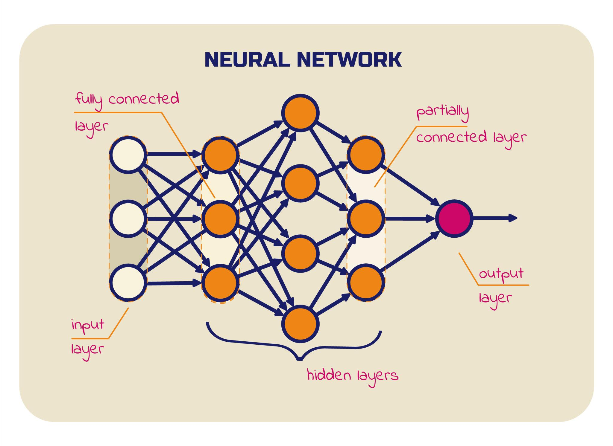
Universal approximation and expressiveness.
A fundamental justification for using neural networks in statistical modeling is their universal approximation property: sufficiently wide or deep neural networks can approximate any continuous function on a compact domain to arbitrary accuracy Hornik et al. (1989); Cybenko (1989). Subsequent work has shown that depth plays a crucial role in efficiently representing highly nonlinear and compositional functions, often allowing deep architectures to achieve exponential gains in representational efficiency over shallow models Montúfar et al. (2014).
Nonparametric regression in high dimensions.
From a statistical perspective, DNNs can be viewed as flexible nonparametric regressors that adapt to unknown smoothness and interaction structures. Unlike classical kernel or spline methods, whose performance deteriorates rapidly as the input dimension increases, neural networks can exploit sparsity, hierarchical structure, and low-dimensional manifolds in high-dimensional covariates Schmidt-Hieber (2020b). These properties make DNNs particularly attractive for estimating conditional expectations or conditional residuals when the conditioning variable is high-dimensional.
Training via backpropagation.
The parameters of a neural network are typically learned by minimizing a loss function using gradient-based optimization. Let
denote a loss function that quantifies the discrepancy between an observed response and the network prediction . Common choices include the squared-error loss for regression and the cross-entropy loss for classification. Given training observations , the network parameters are estimated by minimizing the empirical risk
Gradients of the loss with respect to network parameters are computed using backpropagation, an efficient application of the chain rule that propagates derivatives from the output layer back through each hidden layer. Specifically, let
denote the activations at the th layer, where is the input vector. Backpropagation computes the gradients and recursively by propagating error signals from the output layer toward the input layer. This procedure allows networks with millions of parameters to be trained efficiently using stochastic optimization.
In practice, neural networks are commonly trained using stochastic gradient descent (SGD) or its variants. One widely used method is the Adam optimizer Kingma and Ba (2015), which adaptively adjusts learning rates using estimates of the first and second moments of the gradient. Let denote the gradient at iteration . Adam updates the parameters using
followed by bias correction and the parameter update
This adaptive learning rate scheme often improves convergence stability and reduces the need for extensive hyperparameter tuning.
Generalization and regularization.
Despite their large parameter spaces, DNNs often generalize well when appropriate regularization strategies are employed. Common approaches include
-
•
Early stopping: monitoring validation loss and terminating training before overfitting occurs;
-
•
Weight decay: penalizing large parameter values through regularization;
-
•
Dropout: randomly deactivating neurons during training to reduce co-adaptation among features;
-
•
Sample splitting: using separate datasets for training and evaluation to prevent overfitting bias.
These techniques effectively control model complexity and help prevent the network from memorizing training data rather than learning underlying patterns.
Neural networks for conditional inference.
In modern causal inference and conditional independence testing, neural networks are increasingly used as first-stage learners to estimate conditional means, conditional variances, or conditional distributions Chernozhukov et al. (2018). When combined with sample splitting or cross-fitting, such approaches can mitigate overfitting bias and enable valid downstream statistical inference, even when the first-stage estimators converge at slower rates.
While DNNs excel at capturing complex conditional structure, they do not by themselves provide hypothesis tests or uncertainty quantification. This has motivated hybrid methodologies that pair neural networks with classical or distribution-free statistical tools. In the context of conditional independence testing, neural networks can be leveraged to remove the effect of high-dimensional confounders, after which principled independence tests are applied to the resulting residuals. This separation of conditional modeling and dependence testing forms the foundation of the methodology developed in this thesis.
Chapter 2 Adaptive Multiscale Binary Expansion Tests for Independence
Previously published as:
Yang, Yang, Ping-Shou Zhong, et al. Adaptive Multiscale Binary Expansion Tests for Independence. Proceedings of the 43rd International Conference on Machine Learning (ICML 2026), Proceedings of Machine Learning Research, 2026.
2.1. Background Introduction
Testing statistical independence between multivariate random variables is a fundamental problem in statistics, econometrics, and machine learning. Beyond classical applications such as feature selection, dimension reduction, and graphical modeling Cai et al. (2018); Waggoner (2021), independence tests have recently attracted increasing attention in areas including causal discovery Dai et al. (2022) and large language models Zhu et al. (2025b).
Classical independence tests, such as the test, Fisher’s exact test, and related contingency-table methods Agresti (2013), have been widely used to assess independence between univariate random variables. However, these approaches can be less powerful and less reliable in multivariate settings. This limitation is driven by small expected cell counts under limited sample sizes and by the rapidly growing number of categories needed to represent multivariate variables Székely et al. (2007a); Gretton et al. (2005).
Beyond contingency tables, a broad class of independence tests measures discrepancy between the joint distribution and the product of its marginals. Early examples include Hoeffding’s test of independence Hoeffding (1948) and the related Blum–Kiefer–Rosenblatt coefficient Blum et al. (1961b). Modern developments build on ranks, copulas, and empirical-process ideas to construct distribution-free procedures that are invariant to monotone marginal transformations. Representative examples include consistent rank-based correlations Bergsma and Dassios (2014a); Chatterjee (2021), copula-based goodness-of-fit tests Genest and Rémillard (2004a); Kojadinovic et al. (2005); Rémillard and Scaillet (2009), and the Heller–Heller–Gorfine test Heller et al. (2013b), which aggregates multiscale rank statistics to detect both monotone and nonmonotone dependencies.
Another influential line of work quantifies dependence via the Kullback–Leibler divergence between the joint distribution and the product of marginals, i.e., mutual information. This perspective has motivated -nearest-neighbor estimators Kraskov et al. (2004a); Gao et al. (2017); Singh et al. (2003) and neural estimators Belghazi et al. (2018); Poole et al. (2019) aimed at reducing estimation bias in moderate to high dimensions. More recently, learning- and projection-based paradigms have emerged, including classifier-based reductions Lopez-Paz et al. (2017); Muandet et al. (2017); Kim et al. (2019) and projection-based dependence measures Zhu et al. (2017); Weihs et al. (2018). Despite these advances, nonparametric estimation of multivariate joint distributions remains challenging when sample sizes are limited.
Two especially popular nonparametric measures that avoid explicit joint density estimation are based on the Hilbert–Schmidt Independence Criterion (HSIC) Gretton et al. (2008) and distance correlation Székely et al. (2007a); Sejdinovic et al. (2013). HSIC Gretton et al. (2008) is defined as the Hilbert–Schmidt norm of the cross-covariance operator between random variables mapped into reproducing kernel Hilbert spaces (RKHS). HSIC equals zero if and only if independence holds when the chosen kernels are characteristic (or, more strongly, universal) Gretton et al. (2005); Sriperumbudur et al. (2011); Steinwart (2012). Distance correlation Székely et al. (2007a); Sejdinovic et al. (2013) quantifies dependence through a weighted distance between the joint characteristic function and the product of the marginal characteristic functions; its carefully selected weighting yields a dependence measure that is zero if and only if independence holds and is estimable without explicitly estimating characteristic functions. However, as pointed out by one referee, the weight function in distance correlation down weights the high-frequency components in the characteristic functions, which can potentially reduce power for detecting complex, non-linear, and local dependencies.
In this paper, we introduce a new independence measure by representing characteristic functions via binary expansions Zhang (2019); Zhang et al. (2021); Brown et al. (2025). The new independence measure translates an independence testing problem to a cross-covariance testing problem for binary expansion coefficients under a general setting, not limited to RKHS (hence not depending on the choices of kernels). Moreover, by analyzing the distance covariance measure Székely et al. (2007a) from a binary expansion perspective, we discover that the distance covariance measure is equivalent to a weighted quadratic distance between binary expansion coefficients, involving coefficients of binary expansion for all orders. The inclusion of all high-order binary expansion coefficients may introduce more noise than signal, potentially degrading the power of the distance correlation test. The proposed measure has the flexibility to choose resolution so that we can retain only lower-order coefficients to strike a better balance between signal and noise. In addition, the proposed measure substantially improves interpretability by identifying the components that exhibit dependence when the null hypothesis of independence is rejected (see numerical studies for an illustration).
Based on this measure, we develop a unified framework for testing weighted cross-covariances between binary-expansion interaction coefficients. A naive construction is computationally infeasible because the number of interaction coefficients grows exponentially with dimension and expansion depth. To address this challenge, we introduce a family of -statistic–based test statistics and derive equivalent kernel representations that reduce computational complexity from to , enabling scalable implementation, where is the dimension and is the chosen binary-expansion resolution.
Through weight matrices, the proposed methodology offers additional flexibility and potential power gains. We study two special weighting choices. The first is the identity weight, yielding a baseline test termed the Covariance Binary Expansion Test (CoBET). The second is a distance-correlation–inspired weight, yielding dCoBET, which incorporates positive semidefinite feature weights and establishes a direct link between binary expansions and classical distance-based measures. To adaptively combine complementary weighting schemes, we further introduce wa-dCoBET, which aggregates identity and distance-based weights via sample splitting and foldwise signal-to-noise ratio voting He et al. (2023).
Simulation studies based on multivariate copulas demonstrate that the proposed methods achieve competitive or superior power across a wide range of linear and nonlinear dependence structures, while remaining computationally efficient and theoretically transparent. The remainder of the chapter is organized as follows. Section 2.2 introduces the binary-expansion–based independence measure and the CoBET, dCoBET, and wa-dCoBET statistics, along with their kernel representations and asymptotic distributions. Section 2.3 presents simulation results, Section 2.4 illustrates the method on real data, and Section 2.5 concludes. Additional details and technical proofs are provided in the Section 2.6.
2.2. Independence Measure and Testing Procedure
Let be i.i.d. copies of . We test
where means is independent of and means is not independent of . This section will first introduce a new binary expansion based independence measure, and then introduce the proposed –statistic for testing cross-covariance and derive a computationally efficient and scalable kernel representation of the proposed statistics, and its asymptotic theory. Within this framework, we will introduce three tests: the Covariance Binary Expansion Test (CoBET), a distance-covariance weighted multiscale extension (dCoBET), and an adaptive aggregation procedure, wa-dCoBET, which combines multiple weighting schemes via foldwise signal–to–noise ratio (SNR) voting.
2.2.1. A binary expansion based independence measure
To simplify our notations, we perform componentwise probability–integral transforms to and by and to obtain random vectors and where
for pairs of samples where that are independent copies of . For each transformed coordinate and , define and . It is clear that
The random vectors and have uniform marginals on and satisfy Independence between and admits the classical characterization via characteristic functions:
where denotes the joint characteristic function and , denote the marginal characteristic functions.
Consider the binary expansion for and ,
where are random coefficients that are Bernoulli distributed taking values in . We truncate the binary expansions at a finite depth , which controls the resolution of the representation. For notational simplicity, we assume the resolution for all the components are . By approximation theory, we may ignore the remainder term beyond depth ; the resulting approximation error vanishes as .
Applying Euler’s identity yields
Taking expectations gives a polynomial–trigonometric representation of the marginal characteristic function
where each coefficient is formed from products of and . The same construction applies to each coordinate of .
For a fixed depth , let be the collection of all the non-empty subsets of . Define the multi-index set
and analogously define . Let be the cardinality of the set .
Theorem 2.1.
Let and be the componentwise probability–integral transforms of and , and fix a truncation depth . For , write and define
with defined analogously for . Then
where and , with , and
The proof of Theorem 2.1 is included in section 2.6.1. The expansion in Theorem 2.1 is related to the universal binary expansion approximation of characteristic functions developed in (Zhang, 2019; Zhang et al., 2021). Compared to these results, Theorem 2.1 can be viewed as a corresponding decomposition of independence: The essential difference is expressed as a finite linear combination of cross-covariance coefficients with basis functions .
This covariance form is crucial in the multivariate setting, since within-vector dependence generally implies nonzero marginal interaction means, and therefore any form of dependence is naturally characterized by all cross-covariances . As a direct consequence, testing reduces to testing whether the collection vanishes. This translates the independent testing problem into a covariance test problem, which is an easier problem. More specifically, define the feature vectors
with , and define the cross-covariance matrix
A specific example of , and is given in the section 2.6.8
The results in Theorem 2.1 imply that and are independent if and only if . The binary expansion feature vectors and have dimensions and , which grows exponentially fast as and or grow. Fortunately, this only serves as a theoretical expression for easy understanding. The proposed procedures do NOT construct it explicitly and hence it overcomes the computation issues of using and directly. See Section 2.2.2 for details.
More generally, define a measure of independence between joint characteristic function and marginal characteristic functions
where is a non-negative weight function. This weight measure includes distance covariance measure as a special case. We write as if the weight is applied and write as if the distance-covariance weight Székely et al. (2007a) is used. Applying Theorem 2.1, we have
where the weight matrix has entries
The weight matrix is defined analogously to by replacing with and .
If one chooses the distance-covariance weight Székely et al. (2007a), the resulting population distance covariance admits
where for ,
where is a constant. Both and are symmetric positive semidefinite with closed-form expressions depending only on and , respectively; no numerical integration is required (section 2.6.3). When is large, converges to its limit distance covariance measure .
2.2.2. Covariance Binary Expansion Tests
Theorem 2.1 shows that departures from independence between and are fully characterized by the collection of covariances . Equivalently, independence is characterized by the vanishing of the cross–covariance matrix or the distance measures defined in Section 2.2.1.
The simplest dependence measure aggregates all binary–expansion interactions with identity weights and in defined in Section 2.2.1, write it as . More specifically, define the population functional
The corresponding sample statistic to estimate is constructed as an unbiased –statistic, defined below with and identity matrices, and is referred to as the Covariance Binary Expansion Test (CoBET).
More generally, let and be matrices defined in Section 2.2.1 of sizes, respectively, and . The corresponding population quadratic functional
By Theorem 2.1, for any non-negative definite matrices defined in Section 2.2.1. Choosing distance-covariance motivated weights (e.g., , ) yields the dCoBET family. Although dCoBET and distance covariance share similar weight function, distance covariance is only equivalent to dCoBET when is large enough, but dCoBET has the flexibility to truncate the binary expansion to remove independent components with high-variant.
Unbiased –statistics for CoBET and dCoBET
Given i.i.d. samples , and recall that the binary expansion interaction coefficient vectors and in Section 2.2.1. Define
with
where is a binomial coefficient with . The second and third terms and are used to cancel the non-zeros means in the vectors and so that (see the proof in the Section 2.6.2)
Although the second and third terms and involve summations over and terms, respectively, they can be computed at the order of (See the details in the Section 2.6.3). The construction of is motivated by Chen et al. (2010) but an essential and crucial difference is we do NOT have and available, because and have dimensions and , which grows exponentially fast as and or grows and hence constructing them explicitly is computationally infeasible. Thus, the format in only serves for analyzing its theoretical property.
To compute the proposed CoBET and dCoBET statistics, we note that depends on the terms such as (when ) and . The following theorem shows how to compute them at the order of .
Theorem 2.2.
For any ,
| (2.1) |
Moreover,
where and .
Proof of Theorem 2.2 is given in Section 2.6.4. Equation (2.1) shows that the CoBET kernel can be evaluated in time using only pairwise bit products, despite the exponentially growing ambient dimension of . Similarly, evaluating via the representation in Theorem 2.2 reduces to forming the products inside the braces for each integration point , rather than enumerating the interaction coordinates. Analogous results hold for (when ) and for . In particular, if , we can further write as a product of marginal integrations, which can be computed even more efficiently. See the Section 2.6.4 for the details.
The following Theorem 2.3 provides the leading order variance of the test statistic .
Theorem 2.3.
Under the null hypothesis , the leading order variance of is
| (2.2) |
For CoBET (), (2.2) reduces to To estimate the leading order variance, a ratio-consistent estimator can be obtained by using U-statistics that are similar to the construction of the test statistic . More specifically, we can estimate by
An estimator of can be constructed similarly. Note that both estimators and depend only on the terms like and , which can be computed efficiently using Theorem 2.2 without expanding and explicitly. The following Theorem 2.4 establishes the limiting distribution of dCoBET and CoBET statistics under the null hypothesis.
Theorem 2.4.
Assume are i.i.d. random vector pairs, and are deterministic symmetric matrices. Assume the binary expansion depth as . Let be a ratio-consistent estimator of . If and , under , then
where denotes converging in distribution.
Theorem 2.4 establishes the asymptotic normality of under the null hypothesis, where the statistic is degenerate and its limiting distribution is driven by second–order fluctuations after proper normalization. We now turn to the behavior of under the alternative hypothesis , where this degeneracy no longer holds. In this case, the leading contribution arises from the first–order projection of the underlying kernel, resulting in a classical –rate central limit theorem with a different variance structure.
Theorem 2.5 (Asymptotic normality under alternatives).
Let be i.i.d. random vector pairs. Let and denote the corresponding binary expansion feature vectors, and define
Let and be deterministic symmetric weight matrices, and define
Let
where and . Define the first-order Hoeffding projection
and let , with . Assume:
-
(A1)
;
-
(A2)
the Lindeberg condition holds for the array .
Then, under any alternative for which ,
and
Remark 1.
Condition (A1) is implied by the trace bound
where and . Condition (A2) is implied by the Lyapunov moment condition , and holds automatically when and the binary expansion features are bounded, since is then bounded uniformly in .
2.2.3. Weighted Aggregated dCoBET (wa-dCoBET)
CoBET and dCoBET are constructed using different weighting matrices. Although both weighting matrices maintain the type I error under the null, the power of tests may depend on the choice of weighting matrices due to the underlying dependence structure. To make our procedure adaptive to weight matrices, we introduce a weighted aggregated dCoBET (wa-dCoBET) statistic, which automatically selects and blends multiple weighting schemes using a data-driven signal-to-noise ratio (SNR) criterion He et al. (2023).
We consider two positive weight pairs , corresponding to the identity weighted CoBET choice and the distance-covariance-weighted dCoBET choice, respectively. See Section 2.2 for details. For chosen , let and denote the corresponding –statistic and its standardized version defined in Section 2.2.2, with variance estimated using estimator given in Section 2.2.2. More specifically, is the standardized statistic with identity weight (CoBET) and is the standardized statistic with distance covariance motivated weight (dCoBET).
Foldwise SNR voting.
We split the data into folds (e.g., ) and compute foldwise standardized statistics and . Each fold votes for the weighting with the larger SNR, yielding empirical weights , with .
where and denote the estimated signal–to–noise ratios based on and , respectively.
The empirical vote proportions are used to form the aggregated weights and Evaluating the statistic with these aggregated weights yields the final standardized statistic .
The procedure strictly generalizes CoBET and dCoBET: setting recovers CoBET, while recovers dCoBET with . Foldwise SNR voting provides adaptivity while mitigating overfitting. When the number of folds is large, the estimated and converge (in probability) to their limits and . Hence, the aggregated weight converges in probability to its limit . Then, applying Theorem 2.4 and the Slutsky Theorem, under and , yielding an asymptotically level- test. For details of wa-dCoBET, please refer to Algorithm 1.
The resolution hyperparameter could be selected in a data-driven manor by maximizing the SNR of the power function. To provide practical guidelines and investigate the robustness of the proposed method to , we conducted a sensitivity analysis in section 2.3.6.
If the null hypothesis is rejected, the source of dependence can be further investigated by adding an additional step. Specifically, when the dimensions of the random vectors are moderate, the global statistic can be decomposed into a sum of marginal statistics and their interactions. In higher-dimensional settings, such a decomposition may not be feasible. Instead, one can assess the contribution of each dimension to the aggregated adaptive statistic by removing one dimension at a time and ranking their relative importance. This ranking would provide useful insights into the underlying dependence structure. yielding an asymptotically level- test.
2.3. Numerical Studies
We evaluate the finite-sample performance of CoBET, dCoBET, and wa-dCoBET in terms of empirical size and power, and compare them with several representative baselines, including HSIC Gretton et al. (2012), distance covariance (dCov) Székely et al. (2007a), the randomized dependence coefficient (RDC) Lopez-Paz et al. (2017), Chatterjee’s rank-based correlation with mean aggregation across coordinate pairs (Xi-mean) Chatterjee (2021), and the multi-scale Fisher independence test (MultiFIT) Gorsky and Ma (2022). The experiments vary sample size, dimension, dependence strength, and the form of the relationship between and .
2.3.1. Data-generating mechanisms
We evaluate the proposed methods using synthetic data generated from a copula-based model that allows precise control over both marginal dependence within covariates and the strength of dependence between the variables of interest. Specifically, for each observation , we generate latent random vectors , which are then mapped to observable variables via coordinate-wise transformations.
Copula-based covariates.
Dependence among covariates is induced through a -dimensional Clayton copula with parameter . The Clayton copula allows us to vary the strength of lower-tail dependence while maintaining uniform marginals. Specifically, for each and , we generate
independently, and define
The resulting vector follows a -dimensional Clayton copula with uniform marginals. When , we instead generate independently, corresponding to the independence copula.
Independently of , we generate
which serves as an additional source of randomness in the response construction.
Dependence between and .
Dependence between the variables of interest is controlled by a scalar parameter . When , the response depends only on , yielding independence between and . When , both and depend on , inducing dependence between and through shared latent structure. This design allows us to smoothly vary the signal strength while keeping the marginal distributions fixed.
Coordinate-wise transformations.
Given , we construct with by applying transformations independently across coordinates. Specifically, for , we define
where and are chosen to represent a variety of linear and nonlinear relationships. By varying the functional forms of and , the dimension , the copula parameter , and the dependence parameter , we generate a broad class of alternatives, including linear, nonlinear, monotone, and nonmonotone dependence structures.
This data-generating mechanism provides a flexible yet interpretable framework for evaluating the finite-sample performance of multivariate independence tests. In particular, it allows us to separately control (i) dependence within covariates, (ii) dependence between and , and (iii) the complexity of the coordinate-wise relationships, thereby offering a comprehensive assessment of power and type-I error across a wide range of scenarios.
Coordinate-wise transformation families.
To construct observable variables from the latent copula-based variables , we apply a collection of coordinate-wise transformations designed to capture a diverse range of dependence structures. Let
where denotes the standard normal quantile function, and let be a scalar parameter controlling the strength of dependence between and . For each coordinate , we consider the following transformation families.
-
(1)
Trigonometric (Trig). This transformation induces smooth, oscillatory, and nonmonotone dependence:
-
(2)
Exponential–quadratic (ExpQuad). This setting yields localized, nonlinear dependence with rapidly decaying tails:
-
(3)
Linear. This transformation serves as a baseline linear dependence structure:
-
(4)
Log–quadratic (LogQuad). This transformation combines nonlinear rescaling with amplitude and phase modulation, producing heterogeneous and localized dependence:
In all cases, the parameter governs the strength of dependence: when , depends only on , and the null hypothesis holds. As increases, the dependence between and strengthens through shared latent structure.
For each configuration , we generate independent replications and conduct tests at significance level . We consider sample size and dimensions , with values of chosen from transformation-specific grids that reflect increasing levels of difficulty across dependence structures.
2.3.2. Size and power comparison
Figures 2.1, 2.2, and 2.3 report empirical rejection probabilities as functions of the signal strength for sample sizes , , and , respectively, under four dependence structures and two marginal dimensions . Across all sample sizes and dimensions, when , all procedures maintain empirical sizes close to the nominal level, confirming appropriate type I error control for CoBET, dCoBET, wa-dCoBET, HSIC, dCov RDC, Xi-mean, and MultiFIT.
In the low-dimensional setting (), all methods exhibit increasing power with . CoBET, dCoBET, wa-dCoBET, and RDC are generally the most competitive, while Xi-mean is noticeably less powerful and MultiFIT tends to be conservative. Differences across methods remain modest for Trig, ExpQuad, and Linear transformations.
Under the LogQuad transformation, clearer separation emerges. HSIC, dCov, and Xi-mean show delayed power growth, while RDC improves but still lags behind CoBET, dCoBET, and wa-dCoBET. MultiFIT becomes competitive at moderate signals, but wa-dCoBET and CoBET consistently achieve higher power at weaker signals, highlighting the benefit of adaptive multiscale aggregation.
In higher dimension (), differences become more pronounced. CoBET, dCoBET, and wa-dCoBET—especially wa-dCoBET—achieve earlier detection and steeper power curves. HSIC and dCov require stronger signals, while RDC and MultiFIT lose sensitivity and Xi-mean remains underpowered.
The LogQuad case is the most challenging. wa-dCoBET and CoBET attain high power even at moderate signals, whereas HSIC, dCov, RDC, and Xi-mean lag behind. MultiFIT becomes competitive only at stronger signals but is less effective for weak dependence. This highlights the robustness of adaptive binary expansion in complex high-dimensional settings.
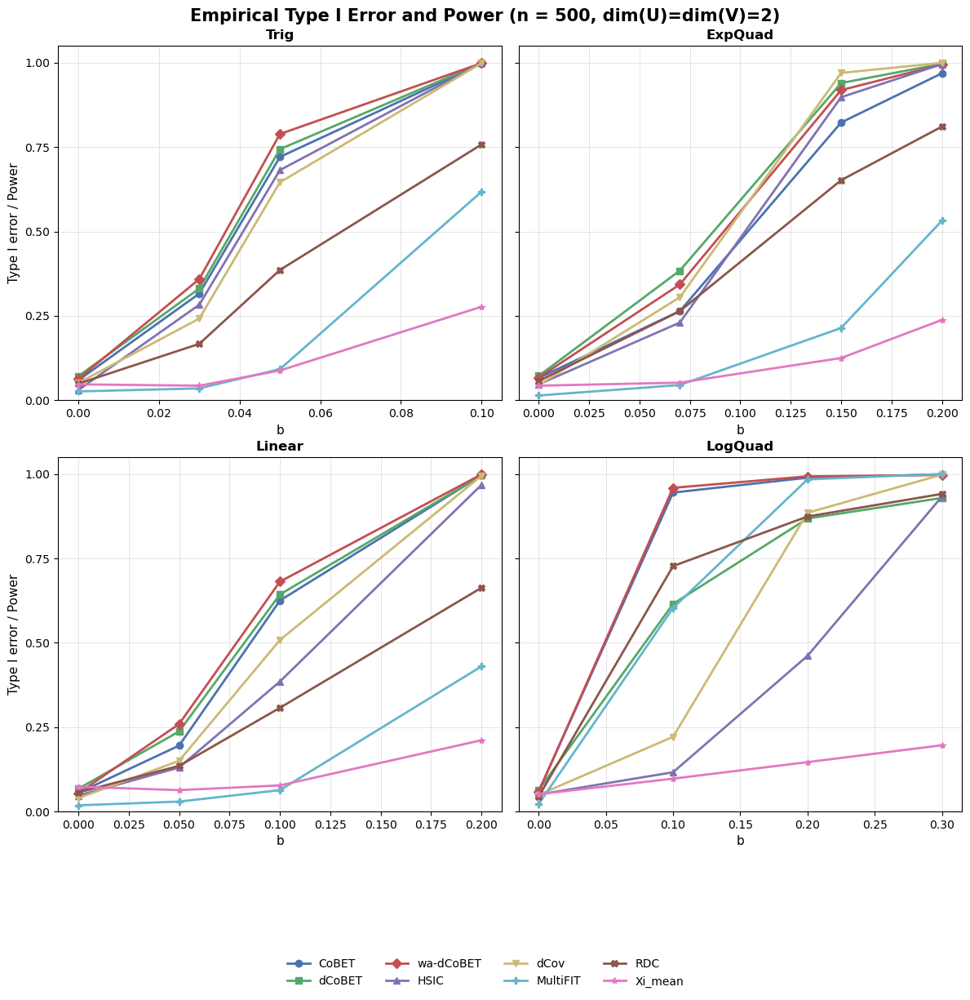
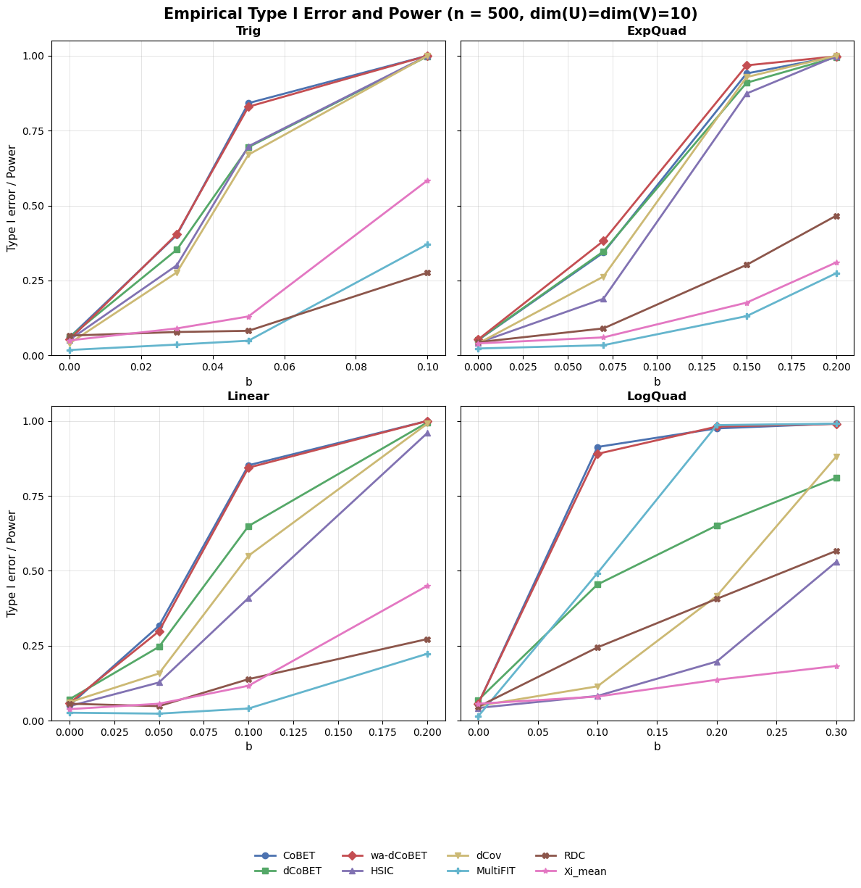
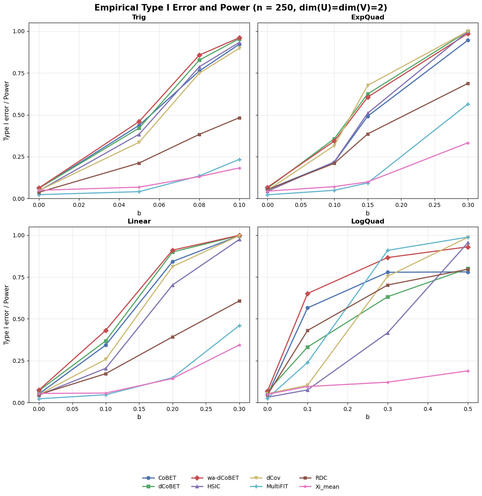
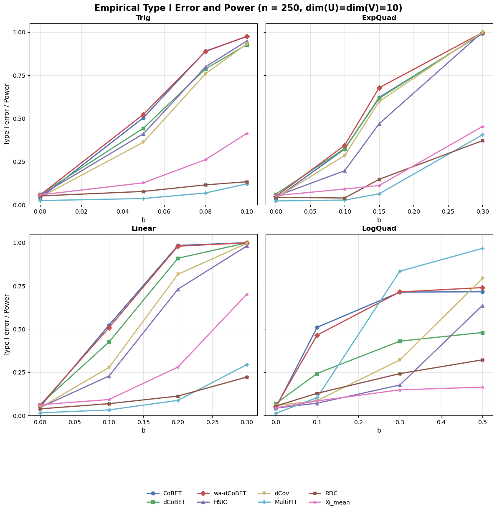
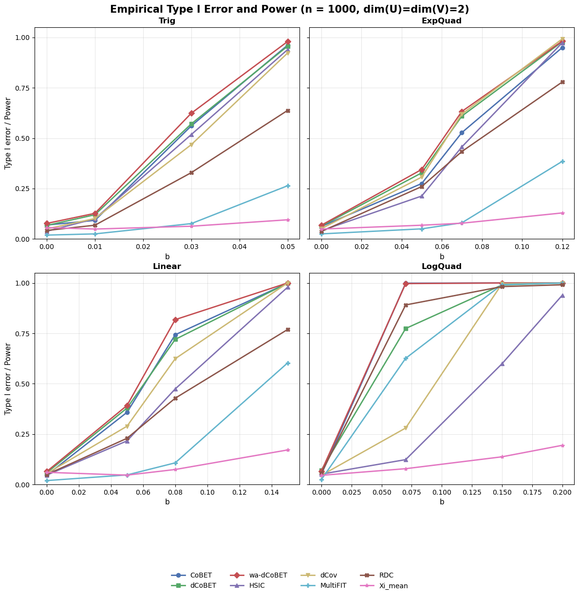
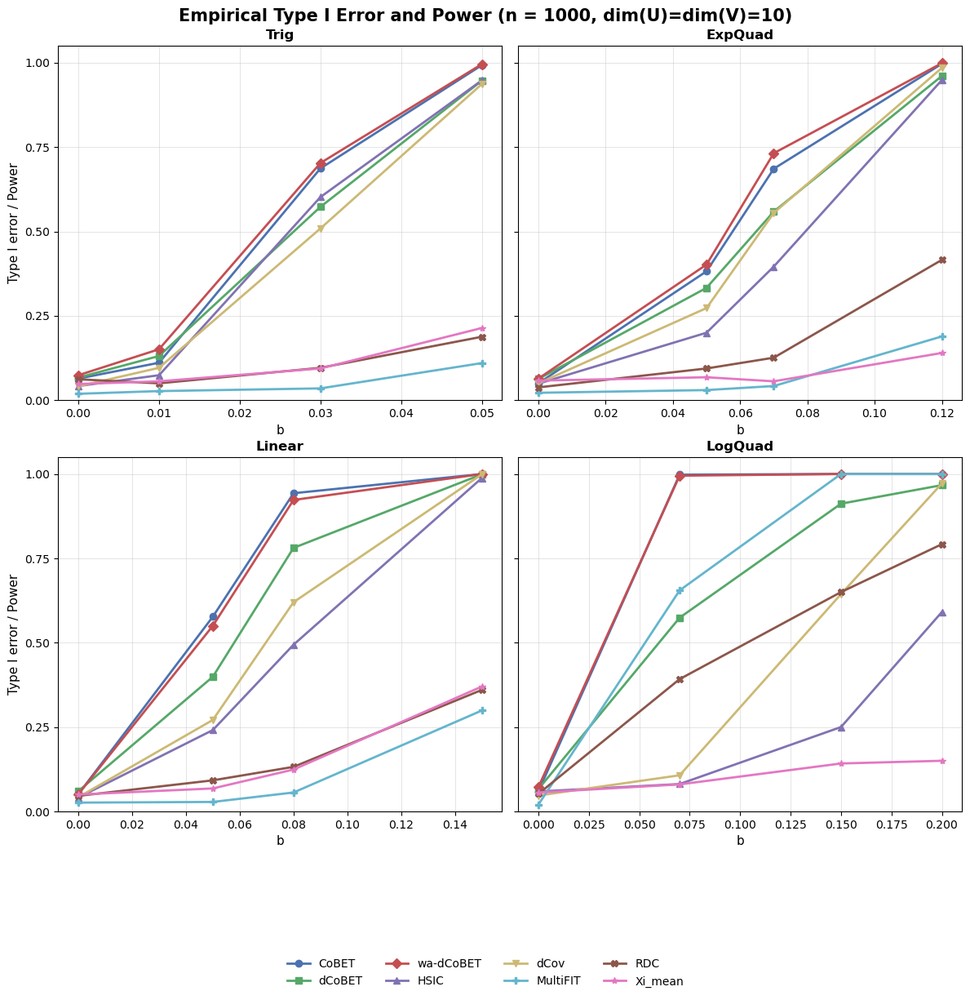
Figures 2.2 and 2.3 show consistent patterns: CoBET, dCoBET, and wa-dCoBET remain strongest, RDC is competitive mainly in low dimension, MultiFIT is effective primarily for LogQuad, and Xi-mean is generally the weakest.
Pairwise heatmap diagnostics.
To visualize coordinate-level dependence, we report heatmaps of pairwise standardized test statistics. Each cell corresponds to the -statistic for testing dependence between a coordinate of and a coordinate of , with darker colors indicating stronger evidence against independence. Multiple testing across coordinate pairs is controlled using the Benjamini–Hochberg false discovery rate (FDR) procedure Benjamini and Hochberg (1995); significant pairs are displayed with higher opacity.
Figure 2.4 illustrates three representative scenarios under the LogQuad transformation with . When , the heatmap shows no significant entries. When , dependence is restricted to matched coordinates, producing a clear diagonal pattern. When , dependence arises from the copula structure, yielding additional off-diagonal discoveries. These cases demonstrate how the heatmap distinguishes null behavior, sparse coordinate-wise dependence, and broader multivariate dependence.
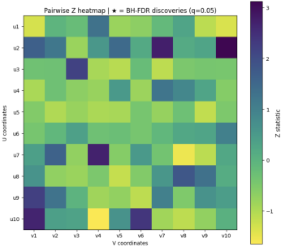
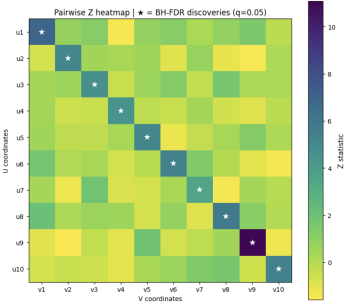
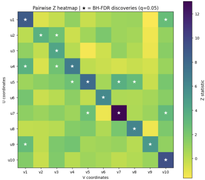
2.3.3. Adaptive Weighting Behavior under Log-Quadratic Dependence
We provide results to further illustrate the behavior of the proposed adaptive weighting mechanism under complex nonlinear dependence. The proposed framework captures high-order interactions through the choice of resolution level , while the SNR-based voting scheme adaptively selects weight matrices that enhance detection power.
We consider the logquad setting described in Section 3.1, which is among the most difficult scenarios due to its combination of oscillatory behavior and localized signal structure. Such dependence cannot be effectively captured by a single interaction scale and instead requires aggregating information across multiple orders. In this setting, we fix , vary the sample size , and evaluate performance over replications at significance level .
The results in Table 2.1 show that the proposed wa-dCoBET consistently achieves power comparable to or exceeding CoBET while substantially outperforming dCoBET across all signal levels.
The adaptive combination provides a clear advantage by learning weights in a data-driven approach. The learned weights reflect the relative detection powers between CoBET and dCoBET as the sample size and signal strength vary, which consistently assigns higher weights to the test with higher power. At the same time, all methods maintain controlled Type I error. Together, these results provide direct empirical evidence that the proposed adaptive weighting mechanism effectively captures complex dependence structures by dynamically balancing contributions from different interaction orders.
| CoBET | dCoBET | wa-dCoBET | Avg | Avg | ||
|---|---|---|---|---|---|---|
| Sample size | ||||||
| 250 | 0.00 | 0.045 | 0.065 | 0.051 | 0.5951 | 0.4049 |
| 250 | 0.10 | 0.510 | 0.243 | 0.465 | 0.5793 | 0.4207 |
| 250 | 0.30 | 0.714 | 0.430 | 0.715 | 0.5555 | 0.4445 |
| 250 | 0.50 | 0.716 | 0.480 | 0.720 | 0.5640 | 0.4360 |
| Sample size | ||||||
| 500 | 0.00 | 0.055 | 0.068 | 0.056 | 0.5629 | 0.4371 |
| 500 | 0.10 | 0.913 | 0.454 | 0.890 | 0.5898 | 0.4102 |
| 500 | 0.20 | 0.975 | 0.651 | 0.981 | 0.5541 | 0.4459 |
| 500 | 0.30 | 0.991 | 0.760 | 0.989 | 0.5528 | 0.4472 |
| Sample size | ||||||
| 1000 | 0.00 | 0.059 | 0.066 | 0.072 | 0.5459 | 0.4541 |
| 1000 | 0.07 | 0.998 | 0.574 | 0.995 | 0.6383 | 0.3617 |
| 1000 | 0.15 | 1.000 | 0.912 | 1.000 | 0.6266 | 0.3734 |
| 1000 | 0.20 | 1.000 | 0.967 | 1.000 | 0.5986 | 0.4014 |
2.3.4. Cross-Dimensional Nonlinear Dependence
To evaluate performance of the proposed methods under more complex dependence structures, we conducted additional simulations involving cross-dimensional interactions and non-separable nonlinear dependence.
Specifically, we consider a multivariate setting with (), where the dependence between and is driven by interactions across multiple coordinates of . Let be generated from a nonlinear transformation of a multivariate copula-based sample similar to the generation in Section 3.1. The random vector is generated by the following model:
| (2.3) |
where and are independent noise terms. This data generation introduces several dependence and challenges: (i) multiplicative cross-dimensional interactions (e.g., ), (ii) non-additive nonlinear structure, and (iii) a shared latent signal across coordinates of through . Such dependence cannot be decomposed into coordinate-wise relationships and therefore provides a setting to evaluate the proposed method’s ability to detect complex joint dependence.
We evaluate the proposed methods with sample size , dimension , resolution , and simulation replication replications. The parameter controls the signal strength, where corresponds to the null hypothesis of independence.
| CoBET | dCoBET | wa-dCoBET | |||
|---|---|---|---|---|---|
| 0.0 | 0.044 | 0.072 | 0.058 | 0.540 | 0.460 |
| 0.1 | 0.076 | 0.092 | 0.11 | 0.457 | 0.543 |
| 0.2 | 0.200 | 0.236 | 0.278 | 0.478 | 0.522 |
| 0.3 | 0.510 | 0.570 | 0.602 | 0.494 | 0.506 |
| 0.5 | 0.952 | 0.970 | 0.982 | 0.392 | 0.608 |
The results demonstrate that CoBET, dCoBET and wa-dCoBET maintain valid Type I error under the null (), with wa-dCoBET remaining well-calibrated. Under increasing signal strength, all methods exhibit increasing power, confirming their ability to detect cross-dimensional complex dependence.
2.3.5. Comparison with BET Zhang (2019) in the Univariate Dimension Setting
Testing independence between one-dimensional random variable, both the proposed method and Zhang’s max BET Zhang (2019) statistic are applicable. Since Zhang’s BET Zhang (2019) is based on the maximum norm and measures the symmetric in binary interactions, BET is more powerful when the strong dependence exists in sparse binary interactions while the proposed test is more powerful when the weak dependence exist in dense (many) binary interactions.
However, it is important to note that BET Zhang (2019) is not applicable to higher-dimensional case due to the computational burden since it requires to obtain the entire vector of binary expansion interactions, which grows exponentially fast as data dimension and resolution grow. The proposed method overcomes this issue by introducing the kernel representations.
To examine the relative performance of the proposed aggregation-based and max-type independence tests Zhang (2019), we consider the logquad setting introduced in Section 3.1 with . The dependence strength is controlled by the parameter , where corresponds to the null hypothesis and introduces increasing levels of nonlinear dependence. Based on the construction, all the binary interaction coefficients are non-zero in the dependence between and , which is the dense regime.
We compare the proposed CoBET, dCoBET, wa-dCoBET, with Zhang’s Max BET Zhang (2019) by setting the sample size at and the significance level . The binary expansion depth is set to . The results are summarized in Table 3.
| CoBET | dCoBET | wa-dCoBET | BET | |
|---|---|---|---|---|
| 0.0 | 0.048 | 0.068 | 0.058 | 0.036 |
| 0.1 | 0.926 | 0.678 | 0.948 | 0.494 |
| 0.2 | 0.990 | 0.892 | 0.996 | 0.864 |
| 0.3 | 0.998 | 0.942 | 0.998 | 0.978 |
| 0.5 | 1.000 | 0.916 | 1.000 | 0.998 |
The results clearly illustrate the trade-off between aggregation-based and max-type statistics. Under the null hypothesis (), all methods maintain valid Type I error. Under dense alternatives, however, substantial differences emerge.
In the weak-signal regime (), Max BET achieves only power, while wa-dCoBET reaches , nearly doubling the detection rate. This gap highlights the well-known limitation of max-type statistics: when the signal is distributed across many components rather than concentrated in a single dominant interaction, the maximum statistic fails to accumulate evidence effectively. In contrast, wa-dCoBET aggregates information across all binary expansion coefficients through a quadratic form, enabling it to capture distributed weak signals. As the signal strength increases, the performance gap narrows, and all methods approach full power. Overall, the experiments provide empirical evidence that wa-dCoBET outperforms Max BET in dense signal regimes.
2.3.6. Choosing the Binary Expansion Resolution
The resolution hyperparameter may be selected in a data-driven manor by maximizing the SNR of the power function in practice. Theoretically speaking, the computational complexity of the proposed test is linear in the depth (resolution) . The asymptotic power of the test is determined by the SNR estimated in the algorithm. To choose an appropriate , one could find that maximizes the SNR of the test while choosing in reasonable range.
To provide practical guidance on the choice of the binary expansion depth and investigate the trade-off between power and computational efficiency, we conducted an additional sensitivity analysis of wa-dCoBET using the logquad function used simulation study (section 3.1), which is among the most challenging dependence settings considered.
In this experiment, the sample size was , and both and were -dimensional vectors (). We evaluated several values of the binary expansion depth in the range . For each , we examined both type I error under the null and power under the logquad alternative with signal strength . The results are summarized in Table 2.4. We observe that the results were generally stable across this range. In particular, the empirical type I error remained close to the nominal level, while power remained high for all four choices of . At the same time, the computational cost increased substantially with , reflecting the exponential growth in the number of interaction terms.
These results illustrate the practical trade-off governed by . Larger values of increase the resolution of the binary expansion and can capture more complex dependence structures, but they also lead to higher variance and more computational cost. Smaller values are more computational efficient, but may be less sensitive to finer-scale nonlinear dependent patterns. In our experiment, achieved essentially maximal power while maintaining near-nominal type I error and substantially lower runtime than or . Based on these considerations, we recommend selecting in a moderate range (e.g., –) and checking robustness across nearby values, with serving as a practical default for moderate sample sizes and dimensions.
| Type I error | Power () | Runtime (sec) | |
|---|---|---|---|
| 3 | 0.064 | 0.98 | 0.026863 |
| 4 | 0.070 | 1.00 | 0.048775 |
| 5 | 0.052 | 0.97 | 0.165217 |
| 6 | 0.042 | 0.94 | 1.051935 |
To evaluate computational scalability with respect to data dimension and resolution, we conducted a systematic study under the logquad function which is simulation section 3.1 by varying the sample size , dimension , and binary expansion depth . The results are summarized in Table 2.5.
The empirical results show that the impact of dimension is relatively mild: increasing from 10 to 50 leads to only moderate increases in runtime, indicating that the kernel-style formulation avoids explicit enumeration of the exponentially large feature space. The expansion depth has slightly more impact on computational cost and the computational time is still reasonable. As increases, the runtime grows (e.g., from approximately 0.05 seconds at to about 2 seconds at when , ).
Importantly, the method remains computationally efficient for moderate depths, where runtimes are well below one second even for larger sample sizes () and higher dimensions (). At the same time, statistical performance remains strong, with controlled Type I error and near-perfect power across all configurations. Overall, these results indicate that the proposed method scales well in practice with respect to dimension, sample size, and the choice of .
| Type I | Power( | Avg Runtime (sec) | |||
|---|---|---|---|---|---|
| 500 | 10 | 3 | 0.058 | 0.966 | 0.012 |
| 500 | 30 | 3 | 0.070 | 0.928 | 0.031 |
| 500 | 50 | 3 | 0.048 | 0.914 | 0.054 |
| 1000 | 50 | 3 | 0.082 | 1.000 | 0.094 |
| 1500 | 50 | 3 | 0.080 | 1.000 | 0.151 |
| 500 | 10 | 4 | 0.056 | 0.980 | 0.019 |
| 500 | 50 | 4 | 0.050 | 0.934 | 0.136 |
| 1000 | 50 | 4 | 0.074 | 1.000 | 0.213 |
| 1500 | 50 | 4 | 0.072 | 1.000 | 0.312 |
| 500 | 10 | 5 | 0.048 | 0.966 | 0.031 |
| 500 | 50 | 5 | 0.046 | 0.928 | 0.484 |
| 1000 | 50 | 5 | 0.082 | 1.000 | 0.697 |
| 1500 | 50 | 5 | 0.066 | 1.000 | 0.934 |
| 500 | 10 | 6 | 0.046 | 0.930 | 0.121 |
| 500 | 50 | 6 | 0.024 | 0.890 | 2.379 |
| 1000 | 50 | 6 | 0.088 | 1.000 | 3.666 |
| 1500 | 50 | 6 | 0.054 | 1.000 | 3.994 |
2.4. Real-World Application
We illustrate wa-dCoBET on corneal epithelial thickness data from a dry eye disease study. The dataset contains measurements across 25 predefined corneal regions for both eyes (OD and OS) from 189 subjects, obtained via anterior segment optical coherence tomography. Each observation is represented as a spatial thickness map, with regions corresponding to angular sectors and concentric rings (See the left two in Figure 4.4).
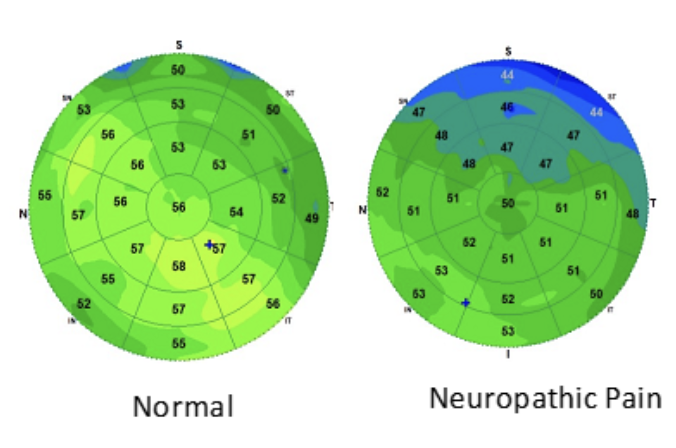
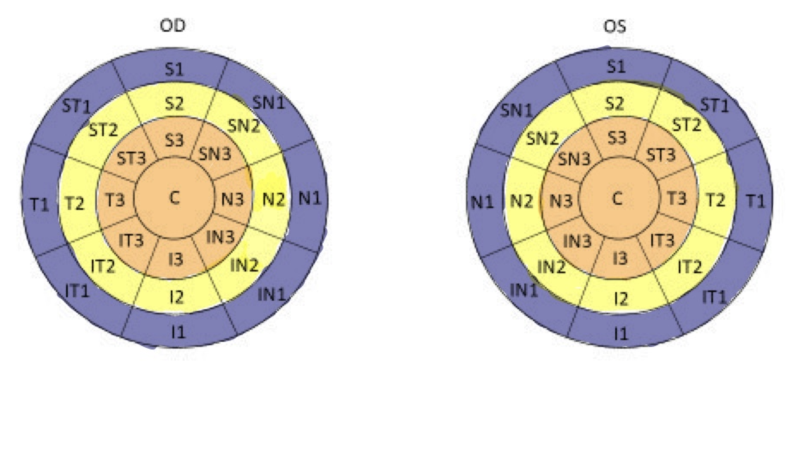
2.4.1. Regional dependence analysis via wa-dCoBET
We apply wa-dCoBET to study dependence patterns in regional epithelial thickness, focusing on dependence between eyes across anatomically corresponding regions. To balance geometric fidelity and dimensionality, the 25 regions are grouped into three concentric sections and analyzed separately: (i) central region plus inner ring (), (ii) middle ring (), and (iii) outer ring (). See the right two in Figure 4.4 for an illustration. For between-eye analysis, OD and OS vectors for each concentric sections are treated as and , respectively. For example, when are, respectively, the OD and OS epithelial thickness for the central region plus inner ring, both are 10-dimensional and hence for the central plus inner region.
We first apply the proposed procedure to detect the dependence between two vectors and for the three concentric sections defined above. The p-values for the three sections have shown significant dependence. To further interpret dependence, Figure 2.6 summarizes the inferred dependence structure. Across all three sections, wa-dCoBET detects strong between-eye dependence, appearing as pronounced diagonal patterns that reflect tight correspondence between matched OD and OS regions.
Between-eye dependence exhibits a clear spatial gradient. In the central section, strong off-diagonal signals indicate substantial mutual dependence among central regions, consistent with a highly coherent epithelial structure near the visual axis. This dependence weakens in the middle ring and is largely absent beyond local neighborhoods in the outer ring, indicating increasing spatial heterogeneity toward the periphery.
Overall, the analysis reveals a hierarchical organization of corneal epithelial thickness: strong bilateral symmetry across all regions, coupled with pronounced within-eye coherence in the central cornea that attenuates with distance from the center. These findings highlight the ability of wa-dCoBET to capture interpretable multiscale dependence patterns in structured biomedical data.
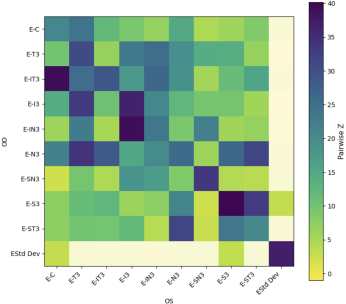
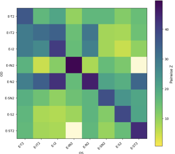
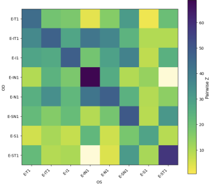
2.5. Conclusion
We introduced a binary-expansion–based independence measure and established a general equivalence between testing independence and testing cross-covariances of binary expansion interaction coefficients for multivariate random variables. Unlike kernel-based measures such as HSIC, this equivalence holds over general spaces and does not rely on reproducing kernel Hilbert space assumptions. To address the computational challenges posed by the exponential growth of binary expansion coefficients, we developed an unbiased U-statistic and derived a scalable kernel representation that enables efficient computation. The proposed method admits a tractable asymptotic theory, eliminates the need for kernel selection, and flexibly truncates higher-order interactions to suppress noise, yielding robust power and improved interpretability.
We developed three complementary procedures: CoBET, a covariance-based test; dCoBET, a weighted extension that incorporates multiscale structure in the spirit of distance-based methods; and wa-dCoBET, an adaptive aggregation procedure that combines multiple weighting schemes via foldwise signal-to-noise-ratio voting. The resulting tests are tuning-free, computationally efficient, and admit asymptotically exact Gaussian calibration without permutation. Simulation studies demonstrate that wa-dCoBET delivers substantial power gains in nonlinear and higher-dimensional settings, while the real-data analysis of corneal epithelial thickness illustrates its interpretability and practical relevance.
2.6. Detailed Proof of Theorems
2.6.1. Proof of Theorem 2.1
We prove the stated finite-depth expansion for .
Step 1: A single coordinate expansion.
Fix a coordinate , a sample index , and a truncation depth . Using the truncated binary expansion
we obtain
Expanding the product over yields a sum indexed by subsets :
Define the one-dimensional basis functions
and the associated sample-level binary interaction
with the convention . Then
Step 2: Multivariate factorization.
Since , multiplying the coordinatewise expansions yields
where
Analogously, for with binary coefficients , we have
Step 3: Joint characteristic function expansion.
Taking expectations over the i.i.d. sample ,
Similarly,
Subtracting yields
where
Finally, if or , then or , implying . Hence the sum was restricted to and , completing the proof. ∎
Remarks for Theorem 2.1.
Theorem 2.1 expresses the deviation from independence as a finite linear combination of the binary–expansion covariance coefficients
with basis functions . Any choice of non-negative weight matrices therefore induces a quadratic aggregation of these coefficients through (2.4). Specific selections recover familiar tests within this framework: CoBET corresponds to and , while dCoBET corresponds to distance covariance-motivated weights that encode multiscale structure across the binary–expansion indices.
2.6.2. Unbiased –statistic estimators
Fix and let and denote the binary–expansion feature vectors constructed from , indexed by and , respectively. Let and , and define the centered features and . Write
For non-negative definite weight matrices and , recall the weighted population functional
| (2.4) |
Population algebra.
Using , we expand
Sample analogues.
Let denote the empirical mean. Motivated by the three population trace terms above, define
Each term admits a symmetrized –statistic representation:
Finally, define the weighted CoBET/dCoBET statistic
Unbiasedness.
is an unbiased –statistic estimator of .
2.6.3. Computational simplifications
To reduce computational cost for and , we exploit algebraic structure in the weighted inner products appearing in and . Define the stacked feature vectors
Then
Recall the weighted –statistics
Simplification for .
Observe that
which implies
Let . Substituting the above identity yields
Simplification for .
Similarly, using the same decomposition,
Let . After combinatorial simplification,
Computational complexity.
Both and can therefore be computed using only pairwise inner products of , , and . This reduces the computational complexity from and to , making the proposed test scalable to large sample sizes.
Closed-form expression of .
Repeated application of product-to-sum identities yields the finite sine–series expansion
Substituting this expansion into the definition of and using the identity
we obtain the closed-form expression
This representation makes explicit and computable for any fixed .
2.6.4. Proof of Theorem 2.2
Recall that where
Step 1: factorization of .
By definition,
Let . Using the elementary identity
we obtain, for each coordinate ,
Multiplying over gives
The term corresponding to equals . Therefore
which proves (2.1).
Step 2: integral representation of .
Next, use the coordinatewise factorization
where
Thus
Applying the same subset-sum identity as in Step 1 (and subtracting the empty multi-index term) gives
This completes the proof.∎
Remarks for Theorem 2.2.
In particular, if , the formula for can be written as the product with marginal integrations,
2.6.5. Proof of Theorem 2.3
Let
and define the covariance matrices
Under , the sequences and are independent, and , .
Step 1: Centering cancellation.
By the explicit substitution and (with and ), expanding each of produces terms. A direct coefficient bookkeeping over the index patterns , , and shows that in the linear combination , every term involving at least one or cancels. Hence
where
and are defined analogously by replacing and with and in the corresponding three- and four-index –statistics. In the following Steps 2-4, we provide details for computing variances . The variances of and can be obtained similarly and hence the details are omitted.
Step 2: Variance expansion for .
Define, for ,
Then
Expand the square:
We now classify the pairs and by overlap pattern. There are three cases:
(a) identical ordered pairs: . There are such terms, contributing
(b) one-index overlap: exactly one of equals one of . A representative term is with distinct . By symmetry, all one-overlap terms reduce to either or , which are equal under i.i.d. relabeling. The number of such ordered quadruples is , so the total contribution is
(c) disjoint pairs: . There are such terms, each equal to by symmetry.
Putting the three cases together,
Also,
hence
Therefore,
Step 3: Simplifications under .
Under , and are independent copies and , so
Moreover, when and are disjoint, is independent of , hence
Thus the disjoint-pairs term vanishes, and the last subtraction also vanishes. We obtain the exact variance decomposition
Step 4: closed-form evaluation of .
Under , and are independent, so
We compute the first factor in detail:
Taking expectation and conditioning on gives
Using and cyclicity of trace,
Analogously,
Therefore,
Step 5: conclude the leading-order variance.
Substituting the expression for yields
Similar to the above computations, under the null hypothesis , it can be shown that
Remarks for Theorem 2.3.
To estimate the leading-order variance, note that
A ratio-consistent estimator can be constructed via –statistics mirroring the bias-correction structure of :
An estimator of is defined analogously. Both estimators depend only on pairwise inner products and , which can be computed efficiently using Theorem 2.2 without explicitly expanding and . ∎
2.6.6. Proof of Theorem 2.4
This proof verifies that the leading term of our statistic falls into the degenerate RKHS –statistic framework of He et al. (2023) and that their Condition (C3) holds under our trace assumptions. Consequently, the asymptotic normality result in He et al. (2023) applies to our standardized statistic .
Kernel representation of the leading term
Under , let
Recall that each binary feature is a product of bits, hence every entry of and takes values in . Therefore each entry of and is uniformly bounded in , implying in particular that have finite moments of all orders and are sub-Gaussian (with constants independent of dimension).
For deterministic symmetric matrices , define the symmetric order–2 kernel
and the associated –statistic
This matches the setup of He et al. (2023) with input and kernel .
The induced second-order kernel
Spectral factorization and the quantities
Let be the integral operator under . Because and
we have the tensor-product decomposition . Hence the eigenvalues of are products of eigenvalues of and , and therefore
where and are eigenvalues of and , respectively. In our finite-dimensional linear-kernel setting, these satisfy
and similarly for , so
Moment bounds for bilinear and quadratic forms
We use the following standard bounds; the constants depend only on the (sub-Gaussian) moment parameters of , which are finite and dimension-free because the coordinates are bounded (entries in ).
Lemma 2.6 (Bilinear/quadratic form moments).
Let be independent, mean-zero, isotropic sub-Gaussian vectors in (i.e., ). Then for any symmetric matrix ,
where depend only on the sub-Gaussian norms of .
Verification of Condition (C3) of He et al. (2023)
Step 1: .
Under ,
and independence implies
Let and so that and . Then
Applying Lemma 2.6 with and ,
and similarly . Hence
Since and by assumption
we conclude
Step 2: .
We have
so by independence
Using ,
and Lemma 2.6 yields
Since , the RHS is ; similarly, . Therefore,
which implies
Conclusion.
2.6.7. Proof of Theorem 2.5
Under the alternative hypothesis , define
For deterministic symmetric weight matrices and , define
Let
Under , the kernel is generally non-degenerate. Therefore, unlike the null case, the first-order Hoeffding projection is the leading term.
Let
Since and are independent copies,
where
Under , is generally nonzero, and hence may be nonzero.
Define the first-order projection
Because is independent of ,
Thus,
Let
By the Hoeffding decomposition,
where
and
with
By construction,
Therefore is a degenerate second-order -statistic.
If the full statistic contains additional terms from the expansion, write
where denotes the remaining higher-order degenerate component. We will show that both and are negligible relative to .
First,
This is the leading variance under . Importantly, in the high-dimensional setting, may depend on through the dimension. Therefore we compare all remainder terms to rather than bounding them by a fixed low-dimensional rate.
Next, since is a degenerate second-order -statistic,
Using the boundedness of the binary expansion features and standard quadratic-form moment bounds,
where
and is a constant independent of and the dimension. Hence
Therefore,
Assume that, under ,
Then
Similarly, for the higher-order degenerate component , standard variance calculations for degenerate higher-order -statistics give
where is the corresponding third-order degenerate projection. Again, by boundedness of the binary expansion features and trace moment bounds,
Thus,
Consequently,
This is smaller than the corresponding ratio for . Therefore, under condition (A1),
Hence,
It remains to prove asymptotic normality of the leading term . Define
Then
Since and the observations are independent,
Therefore is a martingale difference array.
We verify the martingale central limit theorem. First,
Thus,
Second, we verify the Lyapunov condition. We require
Since
and
we have
Assume
Then the Lyapunov condition holds. Therefore, by the martingale central limit theorem,
Combining this with
Slutsky’s theorem yields
Finally, since
we also have
If the variance estimator is ratio-consistent, namely
then another application of Slutsky’s theorem gives
This proves the asymptotic normality of the proposed weighted statistic under the alternative hypothesis. ∎
2.6.8. Worked Example: Binary–Expansion Feature Interactions
We illustrate the construction of the binary–expansion feature vector and enumerate all interaction terms in a simple low–dimensional setting consistent with Section 2.2.1.
Setup.
Let and truncation depth . Let
denote the componentwise probability–integral transforms of .
For each coordinate , the truncated binary expansion is
Binary coefficients.
At depth , each coordinate contributes two binary coefficients
corresponding to the first and second dyadic resolution levels.
Index sets.
For each coordinate , the collection of nonempty subsets of is
The full multi–index set is
Binary–expansion interactions.
For , the interaction feature is
All interaction terms.
In this example, contains interaction features, which we list explicitly below.
For illustration, when and , the feature vector contains the following interaction terms:
Feature vector.
Stacking all interactions yields the binary–expansion feature vector
Interpretation.
Each component of corresponds to a multiscale interaction between binary digits of and . Theorem 2.1 shows that dependence between and is fully characterized by the cross–covariances between these interaction features and their analogues for .
Chapter 3 Testing Conditional Independence with Deep Neural Network Based Binary Expansion Testing (DeepBET)
Previously published as:
Yang, Yang, Kai Zhang, and Ping-Shou Zhong. ”Testing Conditional Independence with Deep Neural Network Based Binary Expansion Testing (DeepBET).” Proceedings of the 28th International Conference on Artificial Intelligence and Statistics (AISTATS 2025), Proceedings of Machine Learning Research, Vol. 258, pp. 4690–4698.
3.1. Background Introduction
Conditional independence (CI) plays a central role in modern statistics, machine learning, and artificial intelligence. Reliable CI testing is essential in many applications, including causal inference Pearl (2009), feature selection Cai et al. (2018), and dimension reduction Waggoner (2021). More broadly, CI testing provides a principled way to characterize relationships among variables, revealing whether associations persist after accounting for other factors. Consequently, CI testing has become an important tool in a wide range of domains, including information extraction, speech recognition, computer vision, genomics, and medical diagnosis.
This chapter focuses on testing whether two random variables, and , are conditionally independent after adjusting for a possibly high-dimensional set of covariates . Assuming the joint density of exists, conditional independence is defined by
whenever
for all , , and such that . Here, denotes the conditional joint density of given , while and are the corresponding conditional marginal densities (see, e.g., Shah and Peters (2020)). Accordingly, the conditional independence testing problem is formulated as
The notation represents statistical independence, and “” denotes conditioning. This chapter focuses on the challenging setting in which the conditioning variable is high-dimensional, allowing its dimension to grow with the sample size . In this regime, estimating the conditional distributions of and given becomes substantially more difficult because of the curse of dimensionality. The problem is particularly pronounced when the number of observations is relatively small compared with the dimension of the confounding variables.
A broad spectrum of methodologies has been developed for conditional independence testing, motivated by its fundamental role in statistical learning, causal inference, and machine learning applications. These methods differ considerably in both their modeling assumptions and computational strategies. One line of research constructs test statistics by comparing the conditional joint distribution of given with the product of the corresponding conditional marginal distributions. The effectiveness of these approaches relies heavily on the choice of discrepancy measure as well as the accuracy of the conditional distribution estimators. Another line of work estimates the conditional effects of and subsequently examines the remaining association between and . Since conditional uncorrelatedness does not, in general, imply conditional independence, such methods may have limited sensitivity to nonlinear alternatives. Kernel-based techniques address this issue by embedding the variables into reproducing kernel Hilbert spaces, allowing a much richer class of nonlinear dependence structures to be detected, although their performance depends on the selected kernel. More recently, generative modeling approaches have been proposed to approximate conditional distributions by producing synthetic observations, offering considerable flexibility for analyzing high-dimensional and complex data.
As summarized in the survey of Li and Fan (2020), the existing literature can be broadly divided into four methodological families: regression-based methods (e.g., Shah and Peters (2020); Hoyer et al. (2009); Zhang et al. (2017, 2023)), kernel-based methods (e.g., Strobl et al. (2017); Fukumizu et al. (2007); Zhang et al. (2012)), distance-based methods (e.g., Wang et al. (2015); Su and White (2014, 2008, 2007)), and sampling-based methods (e.g., Duong and Nguyen (2022); Shi et al. (2021); Bellot and van der Schaar (2019)).
Despite their successes, existing methods often exhibit one or more important shortcomings. Some procedures are not universally consistent and therefore have limited power against certain alternatives. Others struggle in high-dimensional settings because of the curse of dimensionality. Sampling-based approaches may also be computationally demanding and require careful tuning of multiple hyperparameters. As a consequence, many existing methods suffer from inflated type I error, reduced statistical power, substantial computational cost, or instability arising from parameter selection. Another common drawback is limited interpretability: many procedures simply report whether dependence exists without providing insight into its underlying structure. These limitations motivate the development of testing procedures that are simultaneously statistically reliable, computationally scalable, and interpretable. The proposed DeepBET framework is designed to address these challenges by combining deep neural networks (DNNs) with binary expansion testing (BET).
DeepBET integrates three complementary components: deep neural networks, binary expansion testing, and multiple sample splitting. To mitigate the curse of dimensionality, DNN models are first employed to estimate the conditional mean functions of and given . Deep neural networks have demonstrated remarkable flexibility for modeling complex nonlinear relationships in high-dimensional data Polson and Sokolov (2018). Recent theoretical work (e.g., Lu et al. (2021); Bauer and Kohler (2019); Schmidt-Hieber (2020a)) has established consistency and convergence properties for certain classes of DNN estimators under suitable optimization procedures Jentzen and Riekert (2022). The residuals obtained from these fitted models are then analyzed using the binary expansion testing (BET) framework Zhang (2019). BET enjoys desirable theoretical guarantees, including uniform consistency and minimax optimal sample complexity for detecting dependence Zhang (2019), while also providing interpretable information about the form of dependence whenever the null hypothesis is rejected. Finally, a multiple-splitting strategy Guo and Shah (2024) is incorporated to further improve finite-sample power. The resulting procedure achieves effective type I error control while maintaining strong power across a broad range of alternatives.
Extensive simulation studies demonstrate that Yang et al. (2025) consistently achieves higher power than competing methods while maintaining accurate control of the type I error, particularly in challenging high-dimensional scenarios. In addition, its performance is relatively insensitive to the tuning parameters used for DNN estimation. Compared with existing sampling-based approaches (e.g., Shi et al. (2021); Bellot and van der Schaar (2019)), DeepBET is also computationally more efficient. Beyond testing for conditional independence, the proposed framework provides interpretable information regarding the structure of the detected dependence, which can facilitate subsequent statistical modeling and scientific investigation.
The remainder of this chapter is organized as follows. Section 3.2 introduces the DeepBET methodology and establishes the asymptotic properties of the proposed test statistics. Section 3.3 reports simulation results together with an application to corneal epithelial thickness data from a dry eye disease study. Concluding remarks are given in Section 3.4, while all technical proofs are collected in Section 3.5.
3.2. A DeepBET Procedure
Let
be a sequence of independent and identically distributed observations, where the index set is
We assume that the data are generated according to the additive noise models (ANMs)
where and are unknown regression functions that characterize the dependence of and on the potentially high-dimensional confounding variables . Throughout this chapter, both and are assumed to be univariate random variables, while the random errors and are independent of . The ANM assumption is introduced primarily to facilitate the theoretical derivation of the asymptotic null distribution of the proposed DeepBET statistics. As demonstrated in Section 3.2, the empirical performance of DeepBET remains competitive even when the data-generating mechanism does not satisfy the ANM assumption.
The proposed procedure begins by randomly partitioning the index set into two disjoint subsets, denoted by and , such that
The first subset is used to estimate the conditional mean functions via deep neural networks (DNNs) Lee (2021), whereas the second subset is reserved for constructing the conditional independence test statistic.
More specifically, DNN models are fitted using the observations in to estimate the conditional expectations
Deep neural networks consist of multiple hidden layers that repeatedly transform the input through weighted linear combinations followed by nonlinear activation functions. This hierarchical architecture enables DNNs to approximate highly complex nonlinear regression functions in high-dimensional settings. The network architecture adopted in DeepBET is described in Section 3. Let
denote the fitted conditional mean estimators. These trained models are then applied to the observations in to obtain predictions of the conditional means for and .
Using these fitted values, we compute the residuals
which serve as estimates of the unobservable noise variables and . Conditional independence between and given is subsequently assessed by applying the Binary Expansion Testing (BET) procedure to the residual pairs . Figure 3.1 illustrates the overall workflow of the proposed DeepBET framework.
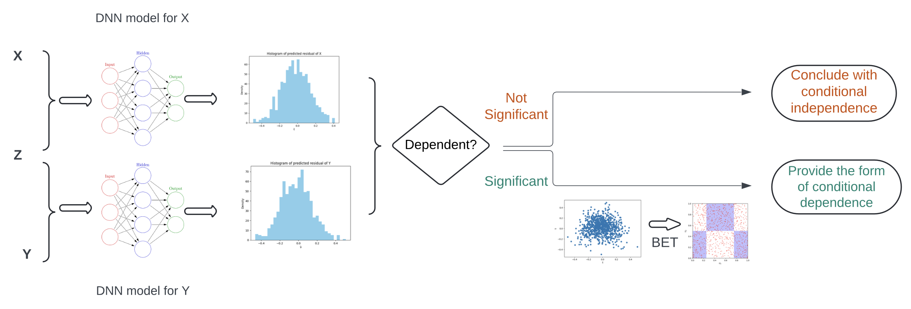
3.2.1. Binary Expansion Statistics
Binary Expansion Testing (BET), originally proposed by Zhang (2019), was developed as a distribution-free method for testing the independence of two random variables. BET possesses several attractive theoretical and practical properties. It is uniformly consistent against all fixed alternatives, achieves the minimax optimal detection rate, and provides interpretable information about the underlying dependence structure whenever the null hypothesis is rejected. Nevertheless, the original BET methodology was designed for unconditional independence and cannot be directly applied to conditional independence problems.
This chapter extends the BET framework to conditional independence testing through the proposed DeepBET procedure. A key advantage of binary expansion is its computational simplicity, since binary representations are straightforward to construct for continuous random variables after suitable transformations. More importantly, binary expansion converts the testing problem into one involving binary variables, for which zero correlation is equivalent to independence. This property forms the theoretical foundation for the consistency of the proposed DeepBET procedure.
We first describe how the marginal binary expansions are constructed. Suppose that are observations from bivariate random vectors whose marginal distributions are uniform on . When the original marginals are not uniform, one may transform them through their distribution functions so that and follow the uniform distribution on , where and are the marginal cumulative distribution functions of and , respectively. When these marginal distributions are unavailable, they may be replaced by their empirical cumulative distribution functions, resulting in transformed observations that lie on the discrete grid . In the DeepBET procedure, we apply empirical CDF transformations to the residuals and , since their marginal distributions are unknown.
The binary expansions of the transformed variables are written as
where and are Bernoulli-type coefficients taking values in . For implementation, these infinite expansions are truncated at depths and , respectively:
For fixed and , the truncated variables and are discrete multinomial variables with and possible values, respectively. As the truncation depths increase, and converge in probability to and . Thus, the joint distribution of can be approximated by the joint distribution of . We refer to statistics formed from the binary coefficients and as BET statistics, and we refer to the corresponding independence testing framework for as BET at depths and .
The pair has at most possible outcomes. Equivalently, the truncation partitions the unit square into a grid. Therefore, the binary expansion representation converts the conditional dependence problem into a finite-dimensional grid-based problem, analogous to a contingency table, whose cell probabilities are identifiable.
To define the BET statistic rigorously, consider the filtration generated by and for each pair of depths and . This filtration is denoted by and is the -field generated by . Let and be binary indicator vectors of lengths and , respectively. The pair indexes an element of the -field , where an entry equal to indicates that the corresponding binary coefficient is included in the interaction. For , define
The corresponding symmetry statistic is
which measures the imbalance between observations satisfying and those satisfying , for and .
The following example illustrates how the BET representation can reveal dependence patterns that are difficult to identify visually from the residual scatter plot. The residuals are generated from the nonlinear model described in Section 3.3.2, where the conditional dependence between and given is not immediately apparent from the raw residual plot.
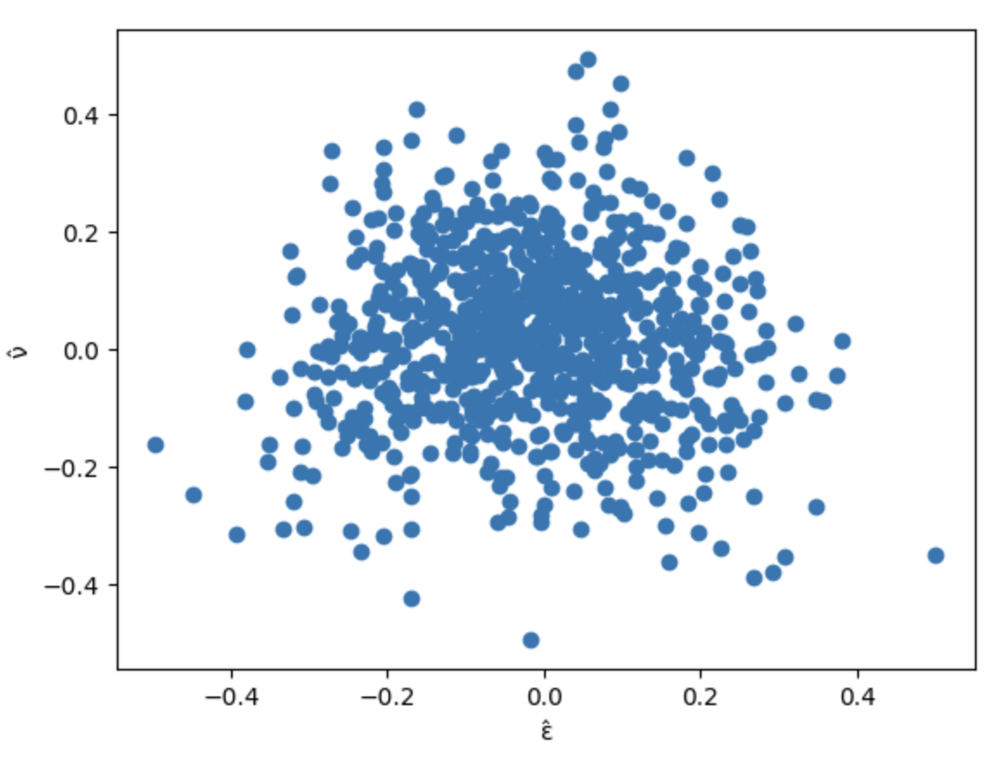
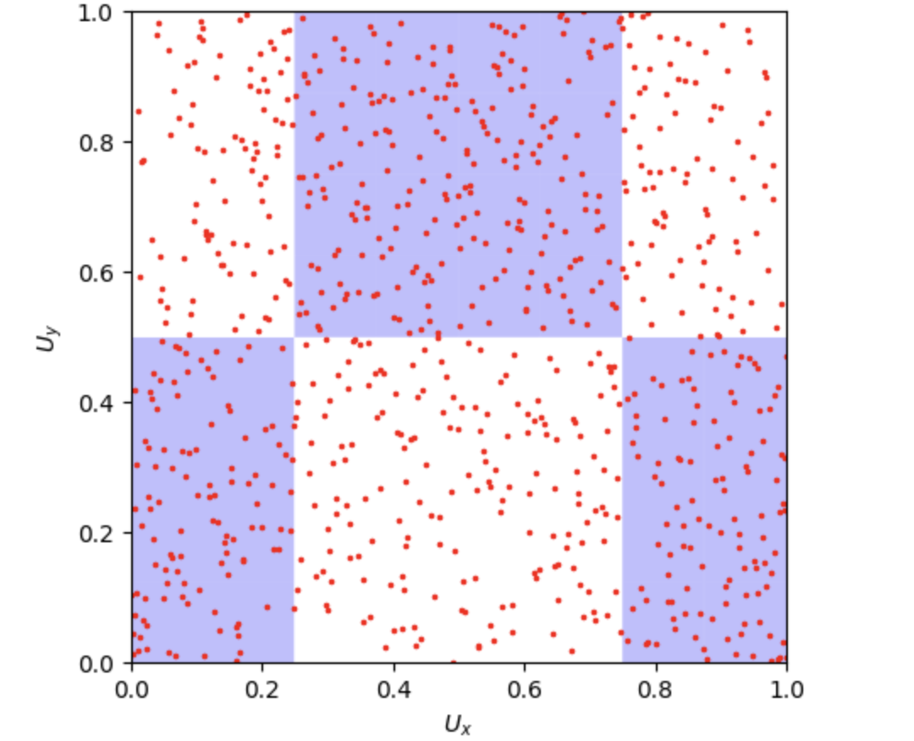
The BET plot not only supports the detection of conditional dependence but also helps visualize its nonlinear structure. In this example, the higher concentration of points in the blue region relative to the white region indicates a systematic conditional association between and after adjusting for . Thus, DeepBET provides both a formal test of conditional independence and an interpretable graphical summary of the detected dependence.
The following theorem characterizes the asymptotic null distribution of the proposed BET statistic .
Theorem 3.1.
Suppose that the regression functions and are -smooth generalized hierarchical models of order , as defined in Section 3.5. Assume that the regularity conditions stated in Lemma 3.5 are satisfied, and that the cumulative distribution functions and possess bounded derivatives. If
then, for any and ,
and
converge to the same limiting distribution, where denotes the sample size of .
Theorem 3.1 provides theoretical support for incorporating DNN estimators into the DeepBET procedure. Because the regression functions are estimated nonparametrically and the covariates may be high-dimensional, the convergence rates of the DNN estimators are generally slower than . Nevertheless, the BET statistic retains a root- asymptotic behavior. This is largely due to the binary structure of the transformed variables and .
This requirement is weaker than the conditions imposed by several sampling-based conditional independence tests. As a comparison, the generative conditional independence test (GCIT) proposed by Bellot and van der Schaar (2019) assumes that the total variation distance between the estimated and true conditional distributions converges at a rate faster than . The double-GAN conditional independence test (DGCIT) of Shi et al. (2021) relaxes this assumption by requiring the product of two total variation distances, corresponding to the conditional distributions of and , to be of smaller order than . Such assumptions can be difficult to satisfy when the intrinsic dimension in Theorem 3.1 is large and no additional smoothness or sparsity structure is imposed on the regression functions. See Shah and Peters (2020) for further discussion of the challenges associated with nonparametric estimation in high-dimensional conditional independence testing.
Theorem 3.1 implies that is asymptotically normal. To improve power across multiple binary interactions, we define the maximal normalized BET statistic as
.
Theorem 3.2.
Suppose that the assumptions of Theorem 3.1 are satisfied and that
Then, under the null hypothesis , the statistic converges in distribution to the maximum of a Gaussian random vector with mean zero and identity covariance matrix as .
The proof of Theorem 3.2 is provided in the Appendix.
3.2.2. Multiple Data Splitting with Rank-Transformed Subsampling
Although the single-split version of DeepBET is easy to implement and computationally attractive, it has several practical limitations. First, the resulting test statistic may vary across different random partitions of the same dataset, introducing additional variability. Second, because only one data split is used to construct the test statistic, the available information is not fully utilized, which may reduce statistical power. First, the resulting test statistic may vary across different random partitions of the data, introducing additional sampling variability. Second, because only a subset of the observations is used to construct the test statistic after model fitting, valuable information from the remaining observations is discarded, which may reduce statistical power. To overcome these limitations, we adopt the multiple-splitting framework proposed by Guo and Shah (2024). By combining results from multiple random splits, the procedure reduces split-induced variability while making more effective use of the available data.
Setup
Suppose that are test statistics computed from different random splits of the testing sample , where is specified in advance. We aggregate these statistics through
where denotes the BET statistic corresponding to the -th sample split for . When is sufficiently large, the conditional variance becomes small, so that the aggregated statistic is substantially less sensitive to the randomness introduced by data splitting.
By Theorem 3.2, the aggregated statistic converges in distribution to a limiting distribution under the null hypothesis. Consequently, the null hypothesis is rejected for sufficiently large values of . Ideally, one would compare with the unknown upper -quantile of . Since this limiting distribution is unavailable in practice, we approximate it using a rank-transformed subsampling procedure. The resulting empirical distribution, denoted by , is then used to estimate the critical value for the proposed test.
Rank-transformed subsampling
We now describe the rank-transformed subsampling procedure for a single aggregation function .
Subsampling. Let denote the subsample size. Throughout the numerical studies in this chapter, we choose
A total of subsamples, each containing observations, are generated with only limited overlap between different subsamples. Specifically, let denote a positive integer (for example, ), and set
The corresponding collection of subsample index sets is
which is constructed according to Algorithm 2 described in Guo and Shah (2024).
For each subsample, the corresponding test statistics are arranged into a matrix
whose -th row is given by
Applying the aggregation function to each row yields
whose empirical distribution function
provides a natural subsampling approximation to the limiting distribution .
Rank transformation. Let denote the empirical distribution function of all entries in . We transform each entry according to
where denotes the rank of among all for and , and is the cumulative distribution function of the standard normal distribution.
The transformed statistics are then aggregated as
and their empirical distribution
is used to estimate the critical value for the aggregated statistic . The complete multiple-splitting procedure is summarized in Algorithm 3.
3.3. Numerical Studies
We first describe the implementation details used in our experiments. We then present simulation studies assessing the empirical size and power of the proposed method and compare its performance with several existing conditional independence tests.
3.3.1. Details of Implementing DNN
The choice of the number of splits in Algorithm 2 involves a trade-off between statistical power and computational cost. A larger value of can improve the stability and power of the aggregated test, but it also increases the computational burden. Based on our empirical studies, values of between 30 and 50 generally provide a good balance. Therefore, throughout the simulations, we set .
Existing theoretical results have shown that deep neural networks can consistently estimate nonparametric functions involving high-dimensional covariates and can help mitigate the curse of dimensionality (e.g., Chen and Shen (1998); Schmidt-Hieber (2020a)). However, their use in statistical inference tasks, particularly conditional independence testing, has not been fully explored. For this reason, we carefully tune the DNN component and examine how its tuning parameters affect the proposed test.
In our implementation, we use fully connected neural networks and consider several activation functions, including LeakyReLU, ReLU, and Tanh. The data are divided into training and testing parts with a ratio of . The learning rate is set to , the batch size is set to , and the number of training epochs is set to . Model parameters are optimized using the Adam optimizer. To reduce overfitting and improve generalization, we apply dropout with rate , meaning that 20% of neurons are randomly dropped in each layer during training.
3.3.2. Simulations
Simulation setting I
We generate data from a post-nonlinear noise model similar to the simulation settings adopted by Shi et al. (2021) and Bellot and van der Schaar (2019). Specifically, the data are generated according to
, and
The coefficient vectors and are independently drawn from the uniform distribution on and subsequently rescaled to have unit norm. The error terms and are generated independently from a Gaussian distribution with mean and variance . The scalar parameter governs the degree of conditional dependence between and . Under the null hypothesis, , whereas nonzero values of correspond to the alternative hypothesis. Throughout the experiments, the nominal significance level is fixed at , and all empirical results are obtained from 500 independent Monte Carlo replications.
The left panel of Figure 3.3 compares the empirical size and power of the proposed DeepBET procedure with the generalized covariance measure (GCM) test Shah and Peters (2020). Both methods employ residuals estimated by a deep neural network using a single sample split. In this experiment, the confounding dimension is fixed at with sample size , while the dependence parameter takes values in . The results demonstrate that DeepBET consistently provides higher empirical power than the DNN+GCM approach while maintaining appropriate type I error control.
To further evaluate the effect of the regression model used for residual estimation, we compare DeepBET based on deep neural networks with BET using random forest residuals. The right panel of Figure 3.3 summarizes the empirical size and power for the setting and , using the same values of . The results indicate that the DNN-based implementation consistently outperforms the random forest alternative across the range of dependence strengths considered.
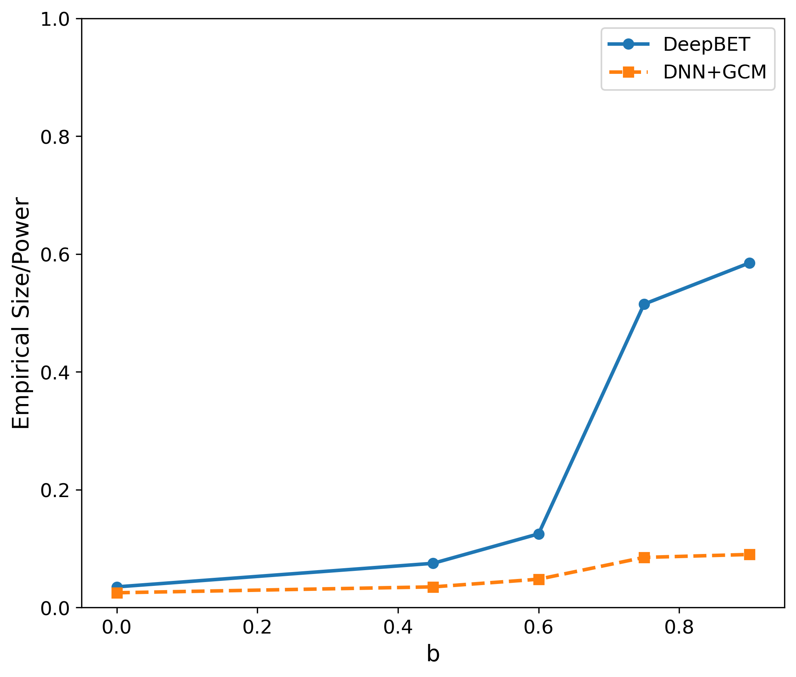

Figure 3.4 compares the single-split and multiple-split versions of the proposed method. We set and vary over and . The multiple-split version controls the type I error while substantially improving power. In particular, when is close to , the power is nearly doubled compared with the single-split version.

We next examine whether the activation function used in the DNN has a substantial impact on the performance of DeepBET. To this end, we compare different activation functions under several dimensions of , namely and , with generated from a standard normal distribution. We also study the empirical power when and and . As shown in Figure 3.5, the empirical results are very similar across activation functions, suggesting that DeepBET is relatively robust to this tuning choice.


Figure 3.6 summarizes the empirical type I error rates under the null hypothesis, corresponding to . We consider two sample sizes, and , while varying the dimension of the confounding variable over and . To assess robustness with respect to the covariate distribution, is generated from both a standard normal distribution and a Laplace distribution. The proposed DeepBET procedure is compared with the generative conditional independence test (GCIT) Bellot and van der Schaar (2019), the double generative adversarial network conditional independence test (DGCIT) Shi et al. (2021), and the classifier conditional independence test (CCIT) Sen et al. (2017).
Overall, DeepBET maintains empirical type I error rates close to the nominal significance level across nearly all simulation settings, with only a slight inflation observed when and . GCIT likewise provides satisfactory type I error control throughout the experiments. In contrast, DGCIT consistently exhibits inflated type I error regardless of the simulation configuration. The performance of CCIT is less stable: its empirical size initially increases with the dimension of before gradually decreasing as the dimensionality becomes larger.
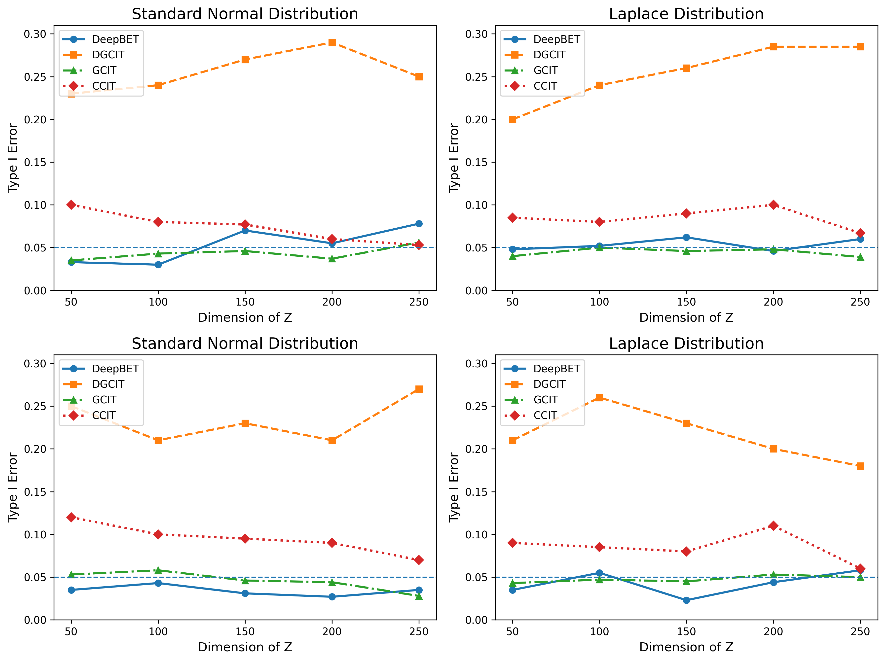
Figure 3.7 presents the empirical power under with and and . We again consider sample sizes and . Across all cases, DeepBET achieves higher empirical power than the competing methods, and its power approaches one as increases to , supporting the consistency of the proposed test. By contrast, GCIT and CCIT exhibit limited power in these settings. We also compare DeepBET with the kernel-based conditional distance correlation (KCDC) test of Wang et al. (2015) when and . In this setting, the empirical size of KCDC is always equal to one, indicating that it fails to control type I error and may not be suitable for conditional independence testing with high-dimensional confounding variables.
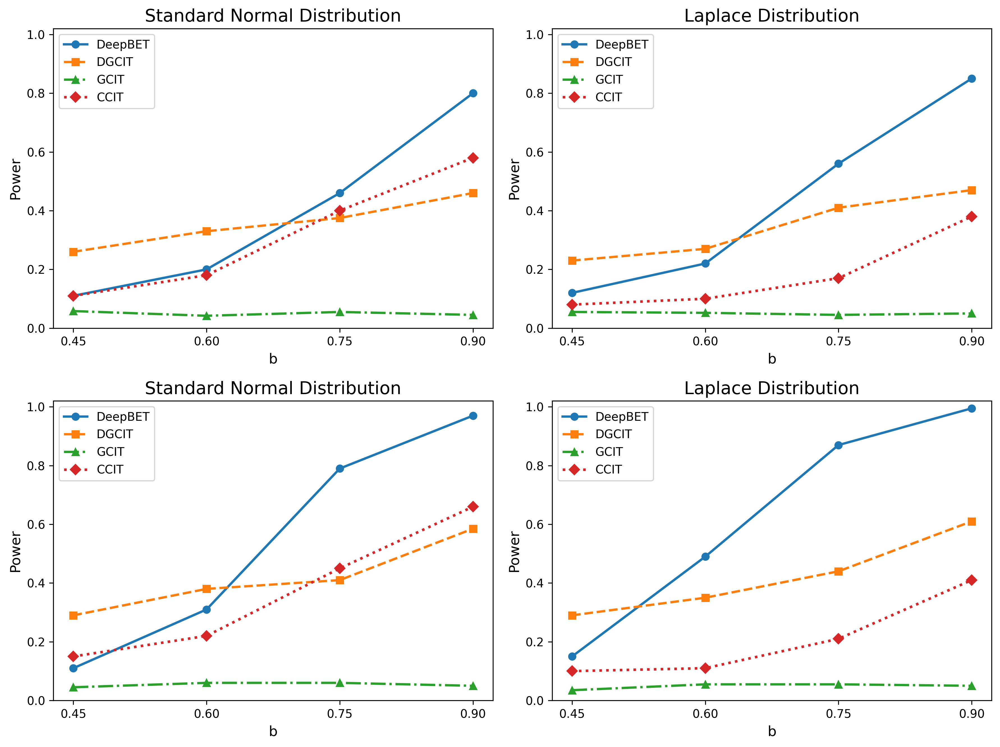
Finally, we evaluate computational efficiency. All experiments are run on Google Colab using an Intel Xeon CPU with 2 vCPUs and a T4 GPU. For one simulation replication, the full DeepBET procedure takes approximately 1.5 seconds with a single split. With multiple splitting, the running time increases to about 1 minute. In comparison, CCIT takes approximately 2 minutes, GCIT takes about 20 seconds, and DGCIT takes roughly 8 minutes.
Simulation setting II
We next consider an additional nonlinear noise model:
, and
where the entries of and , as well as the noise variables and , are generated using the same setup as in Simulation Setting I. The sample size is fixed at , and is generated from a standard normal distribution. The significance level is set to , and all reported results are based on 500 simulation replications.
We vary the dimension of over and . The proposed DeepBET method is compared with the generative conditional independence test (GCIT) of Bellot and van der Schaar (2019) and the DNN+GCM method based on Shah and Peters (2020). The left panel of Figure 3.8 reports empirical size under , corresponding to . The results suggest that DNN+GCM may exhibit inflated type I error when . The right panel of Figure 3.8 compares empirical power when and and , where controls the strength of the alternative. In this setting, DNN+GCM achieves the highest power, followed by DeepBET and then GCIT.
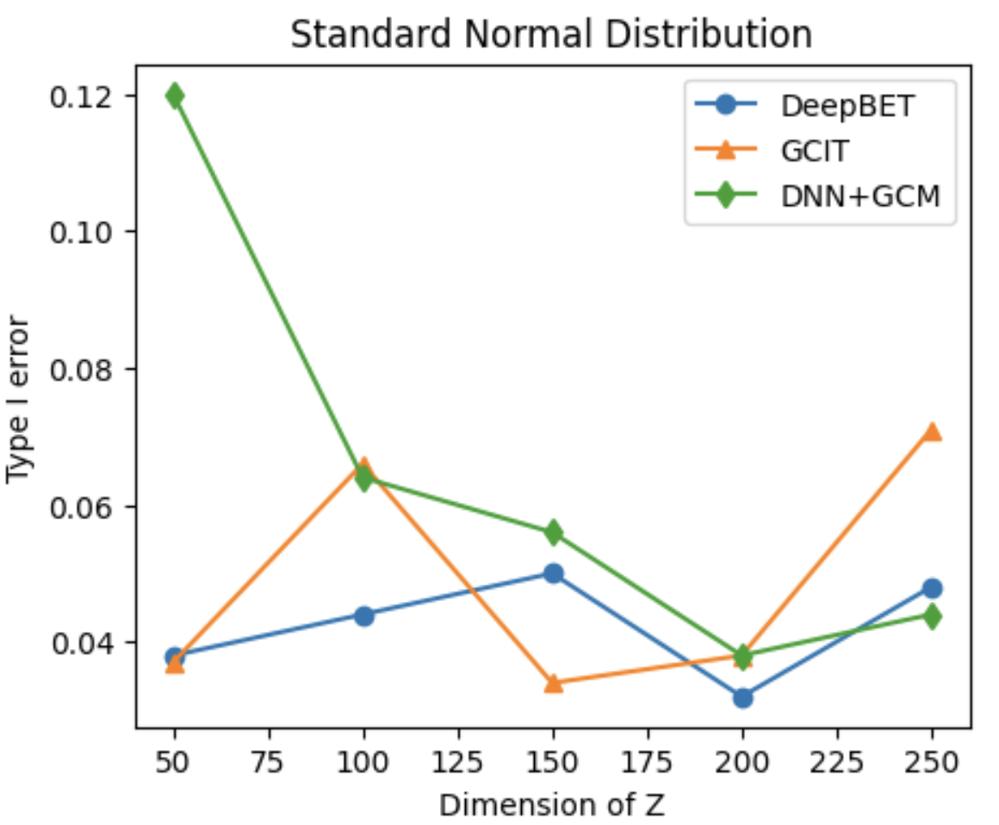
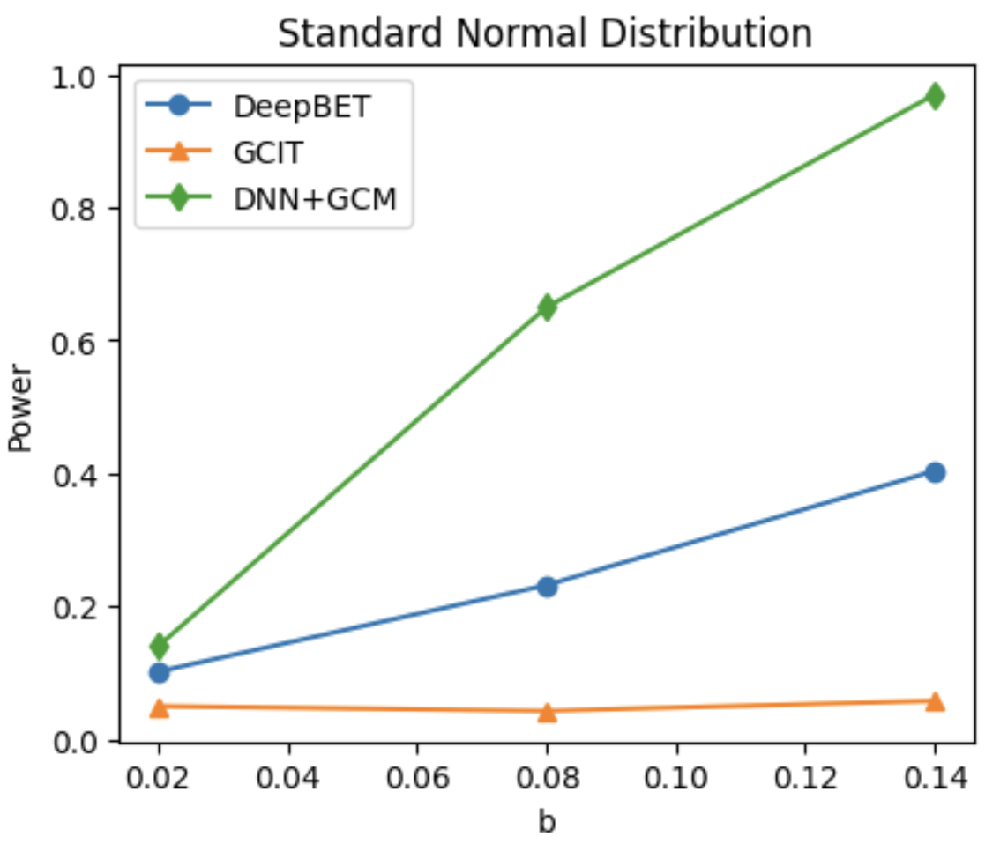
Simulation setting III
We further evaluate the methods under the following nonlinear noise model:
, and
where , , , and follow the same generation scheme as in the preceding simulation settings. The sample size is set to , and is generated from a standard normal distribution.
Again, we vary the dimension of over and . We compare DeepBET with DNN+GCM Shah and Peters (2020). The left panel of Figure 3.9 reports empirical size under , where . In this setting, DNN+GCM shows inflated type I error across all examined dimensions. The right panel of Figure 3.9 reports empirical power when and and . The results indicate that DNN+GCM has limited power for this nonlinear alternative.
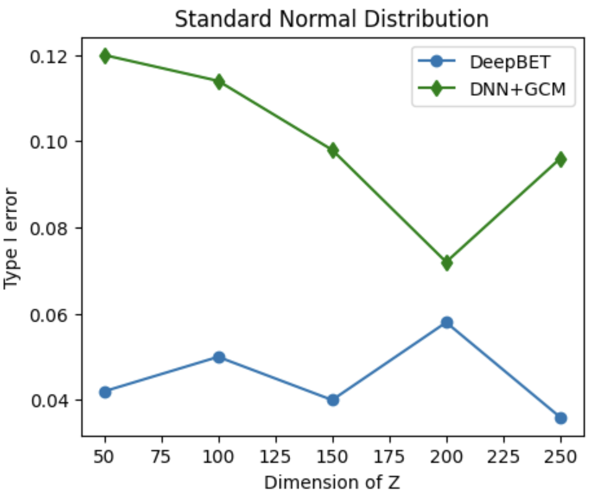
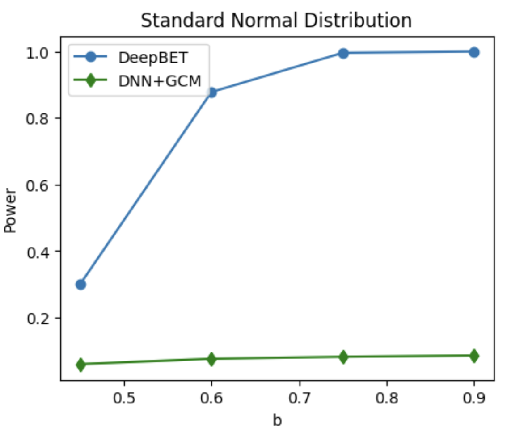
3.3.3. Analysis of Dry Eye Disease Data
Dry eye disease (DED) refers to a heterogeneous group of ocular disorders caused by dysfunction of the ocular surface system. It can substantially affect quality of life, impose financial burden, and create broader societal costs. Symptoms range from mild discomfort to severe pain and burning, and they may interfere with sleep, visual function, and daily productivity. In the United States, DED is estimated to affect more than 16 million individuals, with a prevalence of 6.8% among adults.
Recent clinical studies have reported thinning of the corneal epithelium among patients with DED. Figure 3.10 compares corneal epithelial thickness patterns between normal eyes and three different DED subtypes. Epithelial mapping is obtained using anterior segment optical coherence tomography (AS-OCT), specifically the RTVue XR OCT Avanti System (Optovue Inc., Fremont, California, USA). This imaging modality measures corneal epithelial thickness over 25 corneal regions, where darker colors indicate thinner areas.

The dataset contains corneal epithelial thickness measurements from 25 regions, together with Schirmer test results, for 451 eyes, including 229 right eyes and 222 left eyes. We first fit a random forest model to obtain variable importance measures. The results identify two important indicators for DED diagnosis: the Schirmer test, which measures tear production over five minutes, and the average epithelial thickness across the central 10 corneal regions. Motivated by these findings, we apply DeepBET to identify which of the 25 corneal regions exhibits the strongest association with the Schirmer test after conditioning on the remaining 24 epithelial thickness measurements.
The data are split into training and testing subsets using a ratio. For each analysis, the variable denotes epithelial thickness in one selected corneal region, while denotes the Schirmer test result. The conditioning variable consists of the epithelial thickness measurements from the other 24 regions. DeepBET is first applied separately to the left-eye data to obtain region-specific -values and is then applied analogously to the right-eye data. The primary goal is to determine which corneal regions are most strongly associated with tear production.

Figure 3.11 shows that three epithelial thickness regions are significantly conditionally associated with tear production in both eyes after adjusting for the remaining regions. Multiplicity correction is performed using conformal -values proposed by Zhao and Sun (2024), with the false discovery rate controlled at 5%.
We next examine the BET plots for selected significant regions. Figure 3.12 presents the BET plots for the central region (C) of the left and right eyes, both of which yield significant test results. In these plots, represents epithelial thickness and represents tear production. Within the sigma field of binary variables, with and , the maximal BET statistic identifies a substantially higher concentration of observations in the blue regions than in the white regions. The significant -values indicate that the conditional dependence between and is driven by the interaction between the first bit of the residuals and the first two bits of the residuals.
From a clinical interpretation perspective, after conditioning on the other corneal regions, patients whose central epithelial thickness is either relatively thin, below the first quartile, or relatively thick, above the third quartile, tend to have lower tear production, below the median. This pattern is reflected by the clustering of observations in the lower-left and lower-right regions of the BET plots. By contrast, patients with central epithelial thickness between the first and third quartiles tend to show higher tear production, above the median, corresponding to the concentration of observations in the upper central region. This nonlinear dependence pattern appears consistently in both eyes. Therefore, the BET visualization provides useful heuristic interpretation in addition to formal hypothesis testing. Since many competing conditional independence tests do not directly reveal the structure of dependence after rejecting the null hypothesis, DeepBET offers an interpretable alternative.
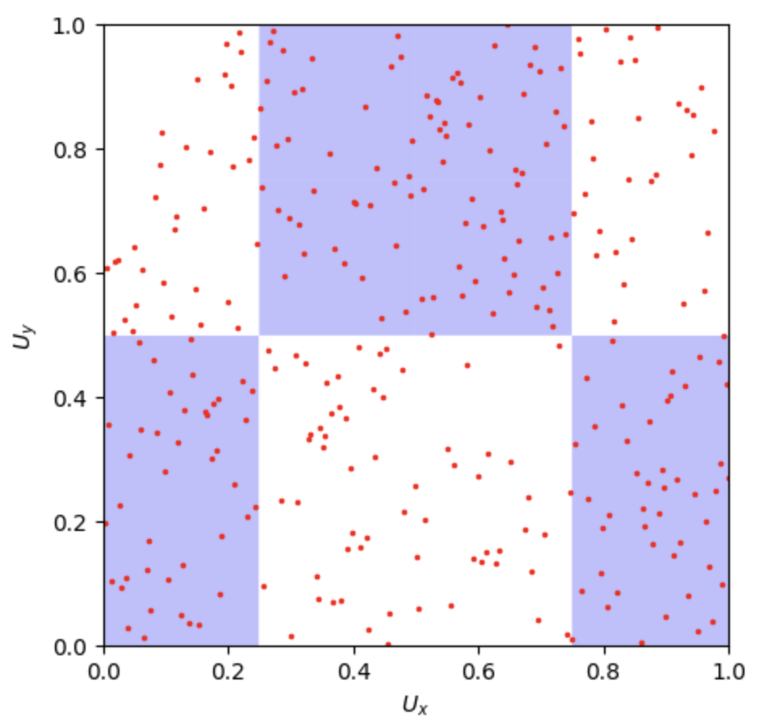
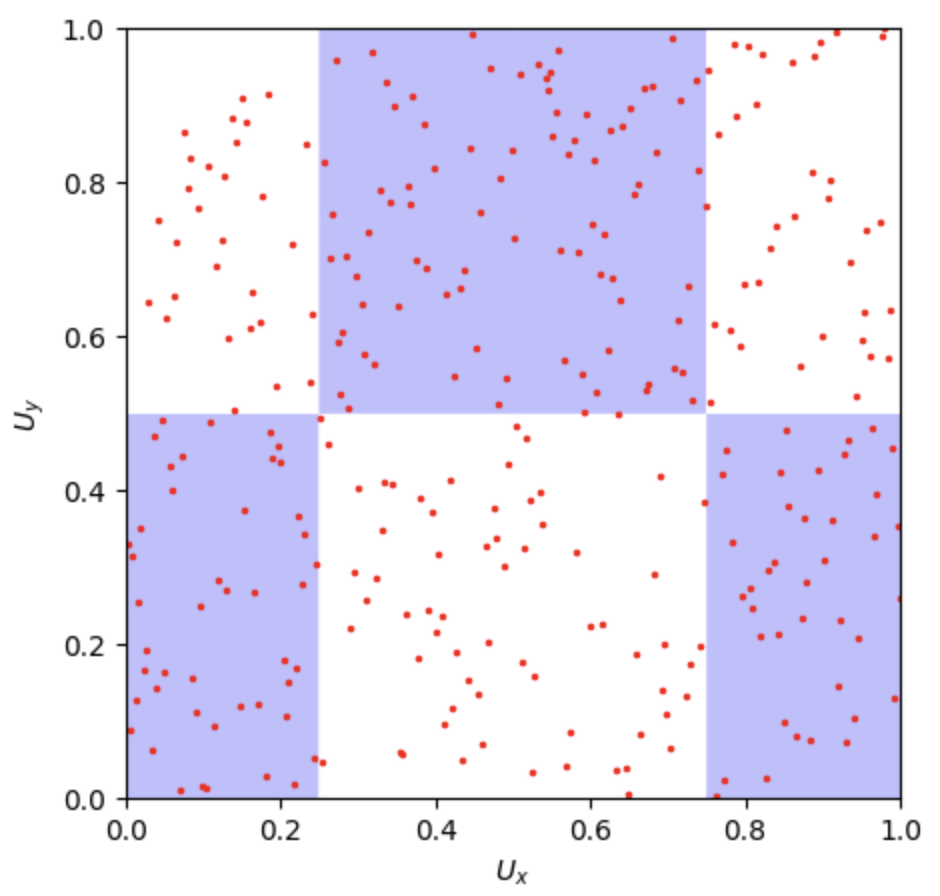
3.4. Discussion
This chapter introduced DeepBET, a new procedure for testing conditional independence in the presence of high-dimensional confounding variables. The proposed framework integrates three complementary components: deep neural networks (DNNs) for estimating conditional mean functions, Binary Expansion Testing (BET) for distribution-free dependence testing, and a multiple-splitting strategy for improving finite-sample performance. Together, these components yield a conditional independence test that is both computationally scalable and theoretically well justified.
The proposed DeepBET procedure possesses several desirable properties. Theoretically, it is uniformly consistent against general alternatives and achieves a root- convergence rate despite relying on nonparametric estimation in high-dimensional settings. Empirically, extensive simulation studies demonstrate that DeepBET effectively controls the type I error, achieves competitive or superior power relative to existing methods, remains computationally efficient, and is relatively insensitive to the choice of DNN tuning parameters. In addition, the BET representation provides interpretable information about the underlying dependence structure, a feature that is often unavailable in competing conditional independence tests.
The theoretical results presented in this chapter complement the rapidly growing literature on statistical estimation and inference using modern machine learning techniques. In particular, they are closely related to recent developments in semiparametric inference involving low-dimensional target parameters and high-dimensional nuisance functions estimated by machine learning methods (e.g., Chernozhukov et al. (2018); Farrell et al. (2021)). Compared with the substantial literature on machine-learning-based estimation and inference, however, relatively little work has investigated the use of deep neural networks for conditional independence testing. The proposed DeepBET framework provides one step in this direction by combining flexible DNN estimation with a distribution-free and interpretable testing procedure.
3.5. Technical Proofs
This section presents the technical assumptions and preliminary results required for establishing the asymptotic properties of the proposed DeepBET procedure. We begin by introducing the smoothness conditions imposed on the regression functions and , together with the hierarchical neural network architecture used to approximate these functions.
Definition 3.3.
A function is said to be -smooth if its partial derivatives of order exist and satisfy
for every , where and .
A function is called a generalized hierarchical interaction model of order and level if there exist vectors and a mapping such that
Then, is a generalized hierarchical interaction model of order and level if there exist , , and such that
where each is itself a generalized hierarchical interaction model of order and level . If every function , , and is -smooth, then is called a -smooth generalized hierarchical interaction model.
Definition 3.4.
A hierarchical neural network is defined recursively given by the following:
and .
Here denotes the collection of neural networks of the form
for some , , , and activation function .
To estimate the unknown regression function , we consider the least-squares estimator
| (3.1) |
where the function class is defined in Definition 3.4. In practice, the optimization problem in (3.1) is solved numerically using gradient-based optimization methods, such as stochastic gradient descent and its variants. Since these algorithms do not necessarily attain the global optimum, the convergence guarantee stated in Lemma 3.5 should be interpreted under the assumption that the optimization procedure achieves the desired estimator. Throughout the theoretical development, we impose the following regularity conditions.
-
(C1)
The covariate vector has bounded support. The regression functions and are assumed to satisfy the -smooth generalized hierarchical interaction model of order and finite level , where for some nonnegative integer and .
-
(C2)
The observations are independent and identically distributed. Furthermore, and for some positive constants and .
The following approximation result, established by Bauer and Kohler (2019), provides the convergence rate of the DNN estimator under the above assumptions.
Lemma 3.5.
Suppose that conditions (C1) and (C2) are satisfied. Furthermore, assume that all partial derivatives of and up to order are bounded, and that is Lipschitz continuous. Let
for a sufficiently large constant , and assume that the activation function is -admissible. Then the estimator obtained by solving the optimization problem in (3.1) satisfies
for sufficiently large .
The following lemma extends the product-difference inequality of Bickel and Levina (2008) from two factors to products involving an arbitrary number of terms ().
Lemma 3.6.
Let . Then, the following inequality holds:
Proof of Lemma 3.6: Note that we can write
It then follows that
This completes the proof of Lemma 2.
Proof of Theorem 1. Since the sample size of the testing set, , is proportional to the full sample size , we use in place of throughout the proof to simplify the notation. By Theorem 4.2 of Zhang (2019),
Therefore, to establish
it is sufficient to verify that
To this end, we first decompose the difference between the estimated statistic and its population counterpart as
where denotes a smoothed version of , which will be introduced later.
The remainder of the proof proceeds in three steps. We establish that each term on the right-hand side is asymptotically negligible relative to . Consequently,
which proves the desired result.
Step 1. Let and denote the residuals obtained from the DNN estimators. Let and be the corresponding cumulative distribution functions of and , respectively. Define the probability integral transforms
The binary expansion coefficients used by DeepBET are then constructed from the transformed residuals. Specifically, Let us construct a smoothed version of so that it transitions smoothly from -1 to +1. That is
| (3.2) |
where is a bump function which is infinitely differentiable defined by
| (3.3) |
The difference between and occurs only in the interval . Outside of this region, both functions are identical. Define the event where and differ:
Then, for any ,
where denote the probability density function of .
When is small and the density is bounded, the above integration can be approximated by the following:
Thus, we have:
Similarly, we can also construct a smoothed version of using . Using the same approach, we can bound the difference between and by
Now, we will bound the difference and . Recall that
Let and denote the -th term in and . Applying the Lemma 2, we have
where, for ,
By definition , So we have
Recall and are the -th term in and , so is either or and is either or . Because and , we have . Thus, we have:
for . Then
Then, if we choose small enough , then we could bound the difference :
Step 2: We will bound the difference between and , which is given by the following expression:
Let and denote the -th term in and , then
where
Since and , we have
Recall the definitions of and in and . It remains to control the differences and . By Taylor expansion,
Therefore,
for some
and
Moreover,
and
Applying the first-order Taylor expansion to and gives
where lies between and , and lies between and . Consequently, for any fixed integer satisfying ,
By the Cauchy-Schwarz inequality:
Assume is bounded by some constant and , and . The derivative of with respect to is given by:
For any , we know that, as ,
Thus, we have: . If we choose small enough so that , then
By the ANM model assumption: :
Because of the Markov inequality and using Lemma 3.5, we obtain:
we have
So, we have
Thus, we can write:
If and , then we have
Step 3. Consider the binary variable constructed from the i.i.d. residuals ,
| (3.4) |
where . Applying the same argument developed in Step 1 yields
Combining the results established in Steps 1–3, we obtain
which completes the proof of Theorem 1.
Proof of Theorem 2. We begin by considering the normalized BET statistic
According to the asymptotic theory established in Zhang (2019), under the null hypothesis, the limiting distribution of the maximum standardized BET statistic coincides with that of the maximum of independent Gaussian random variables. Therefore, it is sufficient to verify that
By Theorem 3.1,
Note that the total number of elements in the -field is . So, we have
If , then . This completes the proof of Theorem 2.
Chapter 4 Multivariate Conditional Independent test
4.1. Background Introduction
Testing conditional independence is a fundamental problem in modern statistics and machine learning. Given three random vectors , , and , the goal is to test the null hypothesis
against the alternative that and remain dependent after conditioning on . Conditional independence testing plays a central role in many applications, including causal discovery, graphical model learning and scientific data analysis. In particular, determining whether two variables remain associated after controlling for confounders is a key step in identifying causal relationships.
While the problem of testing unconditional independence has been extensively studied, the conditional independence setting is considerably more challenging. The difficulty arises from the need to account for the effect of the conditioning variables , which often have moderate or high dimension in modern data. When both and are multivariate, the complexity further increases, as the dependence structure may occur across multiple coordinates and nonlinear interactions.
A variety of methods have been proposed for conditional independence testing. Classical approaches include partial correlation and regression-based tests, which are typically motivated by linear models and Gaussian assumptions. For multivariate Gaussian random vectors, conditional independence between two variables is equivalent to a zero entry in the precision matrix, that is,
where is the precision matrix. This characterization forms the basis of numerous testing and estimation procedures, including partial-correlation tests and graphical model methods for sparse precision matrix estimation (Dempster, 1972; Friedman et al., 2008; Cai et al., 2011; Ren et al., 2015; Janková and van de Geer, 2015). However, these methods rely heavily on linearity and Gaussianity assumptions, and their performance may deteriorate when the underlying relationships are nonlinear or the data depart substantially from Gaussian distributions. Such limitations motivate the development of more flexible nonparametric approaches to conditional independence testing.
To relax parametric assumptions, kernel-based approaches have been developed. The kernel conditional independence test (KCIT) Zhang et al. (2012) extends Hilbert–Schmidt independence criteria (HSIC)Gretton et al. (2005) to the conditional setting by embedding distributions into reproducing kernel Hilbert spaces. Later approximations such as the randomized conditional independence test (RCIT) Strobl et al. (2017) improve computational efficiency through random Fourier features. Although kernel methods are flexible and capable of detecting nonlinear dependencies, they often suffer from high computational cost and require careful kernel selection. In addition, their performance may degrade when the conditioning variable is high dimensional.
More recently, several learning-based conditional independence tests have been proposed. For instance, the generative conditional independence test (GCIT) Bellot and van der Schaar (2019) employs generative models to approximate conditional distributions, while DGCIT Shi et al. (2021) incorporate neural networks or regression-based frameworks to estimate conditional structures. These methods improve flexibility by leveraging modern machine learning models. Nevertheless, they typically rely on permutation procedures or complex resampling schemes, which can lead to high computational cost. Moreover, theoretical guarantees for these approaches remain limited in high-dimensional multivariate settings.
Despite these advances, testing multivariate conditional independence remains a challenging problem. Existing methods often encounter one or more of the following limitations: (i) strong model assumptions such as linearity or Gaussianity, (ii) high computational complexity due to kernel operations or permutation testing, and (iii) reduced statistical power in high-dimensional settings where both and are multivariate.
In this chapter, we propose a new framework for testing multivariate conditional independence that builds upon the binary expansion testing methodology developed in earlier chapters. Specifically, our approach combines ideas from the multivariate independence tests introduced in Chapter 2, including the Covariance Binary Expansion Test (CoBET), with the conditional modeling strategy developed in Chapter 3 for univariate conditional independence testing (DeepBET).
The key idea is to first estimate the conditional expectations of and given using flexible nonparametric models, such as deep neural networks, which are capable of capturing complex nonlinear relationships in high-dimensional data. After removing the estimated conditional effects, the resulting residuals are transformed using binary expansion representations. Dependence between the residualized variables is then measured through covariance structures of these binary expansion features, leading to the test statistics that generalize the CoBET frameworks to the conditional multivariate setting.
The remainder of this chapter develops the proposed multivariate conditional independence test in detail. We first introduce the conditional residual estimation framework using deep neural networks, followed by the construction of binary expansion features for multivariate variables. We then present the resulting test statistics and their theoretical properties, including asymptotic behavior and variance structure. Finally, extensive simulation studies and real data applications demonstrate the effectiveness of the proposed method compared with existing approaches.
4.2. DeepCoBET: Multivariate Conditional Independence via Deep Residualization
In this section, we introduce a unified framework for testing multivariate conditional independence by combining deep neural network-based residual estimation with the binary expansion testing methodology developed in earlier chapters. The resulting procedures, termed DeepCoBET extend the DeepBET framework from univariate to multivariate settings.
4.2.1. Model setup and hypothesis
Let , , be independent and identically distributed observations, where
Following the setting introduced in Chapter 3, the dimension of the conditioning variable is allowed to be large and may increase with the sample size .
Our goal is to test the conditional independence hypothesis
Similar to the framework adopted in Chapter 3, we assume the multivariate additive noise model
| (4.1) |
where
are unknown measurable functions, and the noise vectors and satisfy
Under the null hypothesis , the residual vectors are additionally independent,
Consequently, testing conditional independence reduces to testing the independence of the latent residual vectors and . Since these residuals are unobservable, they must first be estimated from the observed data through multivariate nonparametric regression.
The additive noise model provides a convenient theoretical framework that links conditional independence testing to the multivariate independence testing procedures developed in Chapters 2 and 3. In particular, once consistent estimates of the regression functions and are obtained, the problem can be transformed into an independence testing problem based on the estimated residuals. Although the theoretical development is presented under the additive noise model, the simulation studies demonstrate that the proposed procedure remains effective across a broad range of nonlinear data-generating mechanisms.
4.2.2. Deep residualization via neural networks
We estimate the conditional mean functions
using deep neural networks (DNNs).
To reduce overfitting bias and ensure valid inference, we adopt a sample-splitting or cross-fitting strategy. Specifically, we partition the index set into folds. For each fold , we train neural networks on the complement and obtain predictions on .
Let and denote the estimators trained without fold . The residuals are then defined as
| (4.2) |
Under suitable consistency conditions on the neural network estimators, approximate , and hence are approximately independent under .
4.2.3. Rank transformation and binary expansion
To construct distribution-free test statistics, we first transform each coordinate of the estimated residuals to approximately uniform marginals using empirical probability integral transforms. Let
denote the estimated residual vectors. For the th coordinate of and the th coordinate of , define
for and . Equivalently, and are empirical marginal CDF transforms of the estimated residuals. Let
Following the binary expansion framework developed in Chapter 2, each coordinate of and is represented using binary digits. Let
and
denote the corresponding binary expansion variables.
The binary expansion feature vectors are then formed by collecting all nonconstant interaction terms generated from these binary variables.Let
denote a binary index vector, where indicates that the binary expansion variable is included in the interaction term and otherwise. Similarly, let
denote the corresponding binary index vector for the variables .
The binary expansion feature vectors are defined by
and analogously,
Consequently,
These multiscale binary expansion features capture dependence patterns at different resolutions and provide the foundation for the weighted independence statistics introduced in the next section.
4.2.4. Test statistic: DeepCoBET
Based on the binary expansion representations of the residualized variables, we construct a conditional independence test by applying the CoBET framework developed in Chapter 2 to the estimated residuals. Let and denote the binary expansion feature vectors obtained from the rank-transformed residual vectors and , respectively. Define the
Following Chapter 2, the DeepCoBET statistic is defined as
where
and
The statistic is a fourth-order unbiased estimator of the squared dependence measure between the residual vectors. Under the null hypothesis of conditional independence, the residual vectors are independent, implying that the corresponding population dependence measure is zero. Consequently, large values of provide evidence against .
By applying the binary expansion framework to the estimated residuals, DeepCoBET extends the CoBET methodology from unconditional independence testing to conditional independence testing. The multiscale binary expansion features capture nonlinear and higher-order interaction patterns that remain after adjusting for the conditioning variables. At the same time, the explicit quadratic-form representation developed in Chapter 2 enables efficient computation and facilitates the asymptotic analysis presented in the following sections.
4.2.5. Testing procedure
The proposed procedure combines deep neural network-based residual estimation with binary expansion-based dependence testing in a two-stage framework.
First, the conditional mean functions
are estimated using cross-fitted multilayer perceptrons, yielding residuals
In our implementation, cross-fitting is performed using five folds. Within each training fold, an additional training-validation split is employed for early stopping, and all variables are standardized using statistics computed from the corresponding training sample.
Next, the estimated residuals are transformed to approximately uniform marginals through the empirical probability integral transform. Specifically,
and
where a small random jitter is added only to break ties. The transformed residual vectors
are then expanded through binary representations up to depth to construct the feature vectors and .
Finally, the DeepCoBET statistic is computed from the binary expansion features and calibrated using the asymptotic theory developed in the previous section.
Overall, the proposed procedure combines the flexibility of deep neural networks for estimating complex conditional mean functions with the distribution-free and multiscale properties of binary expansion-based independence testing.
4.3. Numerical Studies
4.3.1. Data-generating mechanisms and experimental setup
We evaluate the proposed DeepCoBET procedure using synthetic data generated from a high-dimensional additive noise model. The simulation design allows us to control both the complexity of the regression functions and the strength of conditional dependence between and given .
High-dimensional covariates.
For each observation , we generate
independently, where throughout the experiments.
Multi-index latent structure.
To generate multivariate responses from the high-dimensional covariates, we construct loading matrices
whose entries are independently sampled from and whose columns are normalized to have unit norm. Define
The vectors and serve as lower-dimensional summaries of the high-dimensional conditioning variable and enter the response construction through nonlinear transformations.
Conditional dependence structure.
The strength of conditional dependence is controlled by a scalar parameter . Under the null hypothesis,
the responses are generated according to
where
independently.
Transformation families.
To evaluate performance across different nonlinear structures, we consider three pairs of conditional mean functions .
-
(1)
Linear–Linear.
-
(2)
Sigmoid–Tanh.
-
(3)
Sine–Quadratic.
Experimental configuration.
For each transformation setting, we consider response dimensions
with sample size
The dependence parameter is varied over a grid of values ranging from the null case to increasingly strong alternatives. All tests are conducted at significance level
For each configuration, empirical Type I error rates and powers are estimated from independent simulation replications.
The conditional mean functions are estimated using fully connected neural networks with three hidden layers of width and ReLU activation functions. Five-fold cross-fitting is employed to obtain residual estimates. Following residual estimation, each coordinate is transformed to approximately using empirical ranks, and binary expansion features are constructed with depth .
4.3.2. Simulation Results
We evaluate the empirical performance of the proposed CoBET procedure under three data-generating mechanisms of increasing nonlinearity. We consider two dimensional settings, , and compare CoBET with HSIC Gretton et al. (2005), distance covariance (dCov) Székely et al. (2007a), and RDC Lopez-Paz et al. (2017). The results are summarized through power curves over five signal levels, where the first point corresponds to the null case.
Overall, DeepCoBET demonstrates stable type I error control and strong power across all settings and dimensions. In the low-dimensional case (), DeepCoBET closely matches the performance of HSIC and dCov, achieving near-perfect power at strong signals while maintaining size near the nominal level. In the higher-dimensional case (), the problem becomes more challenging at weak signals, but DeepCoBET remains competitive with both HSIC and dCov and continues to exhibit reliable behavior. In contrast, RDC performs substantially worse across all settings, with consistently low power.
In Setting 1 (Figures 4.1), DeepCoBET, HSIC, and dCov exhibit very similar behavior. All three methods achieve strong power as the signal increases, with dCov being slightly higher at moderate and strong signal levels. DeepCoBET closely tracks dCov while maintaining better size control than HSIC in the higher-dimensional case. RDC shows weak performance throughout.
In Setting 2 (Figures 4.2), DeepCoBET remains highly competitive across both dimensions. It provides better control of type I error than HSIC and dCov, particularly when , while achieving comparable power. Although dCov attains the highest power at some signal levels, DeepCoBET reaches near-perfect power at strong signals and offers a favorable balance between size and power. RDC again exhibits limited sensitivity.
In Setting 3 (Figures 4.3), the same pattern persists. DeepCoBET maintains stable size and strong power in both dimensions, remaining comparable to HSIC and slightly below dCov at certain signal levels. All three methods approach high power as the signal increases, whereas RDC continues to perform poorly.
Taken together, these results demonstrate that DeepCoBET is robust across both low- and moderate-dimensional settings. It achieves a consistent balance between type I error control and power, scales well with dimension, and substantially outperforms RDC while remaining competitive with HSIC and dCov.
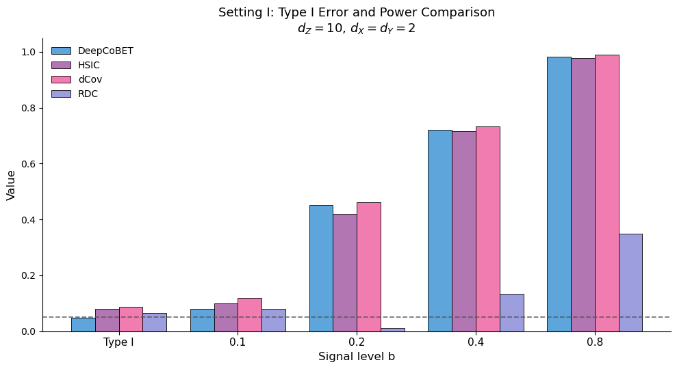
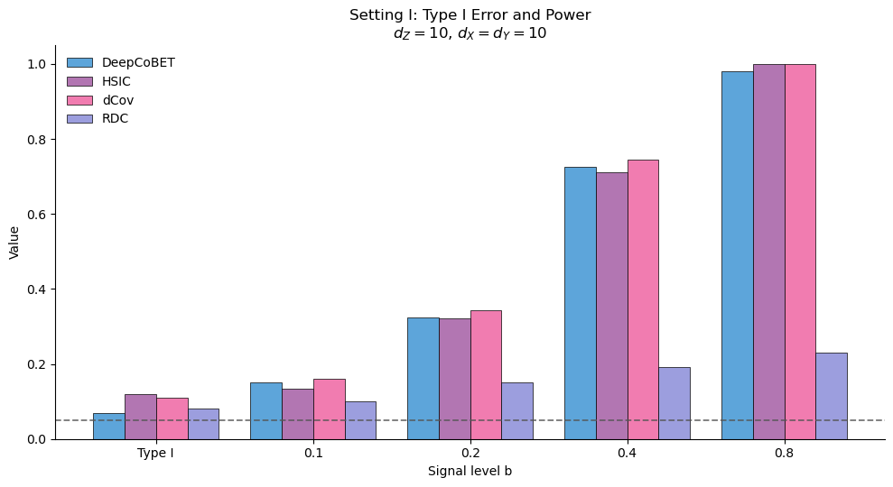
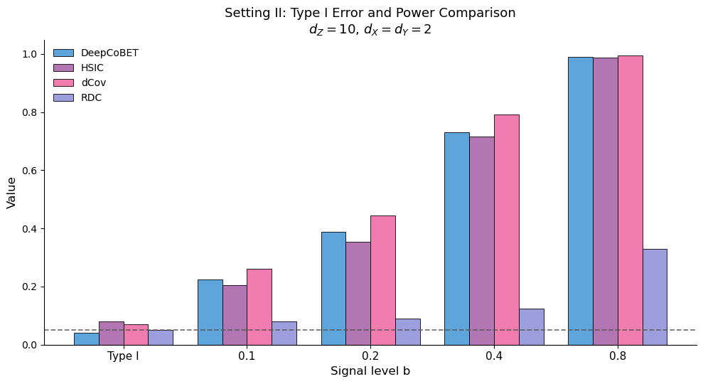
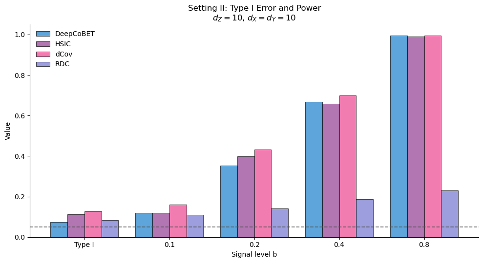
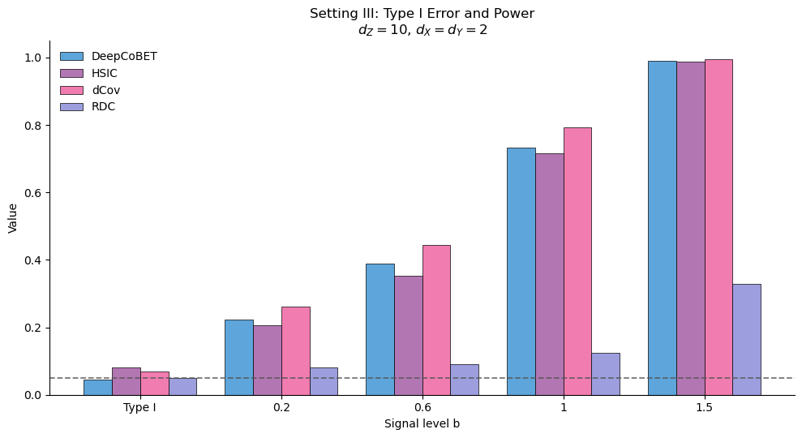
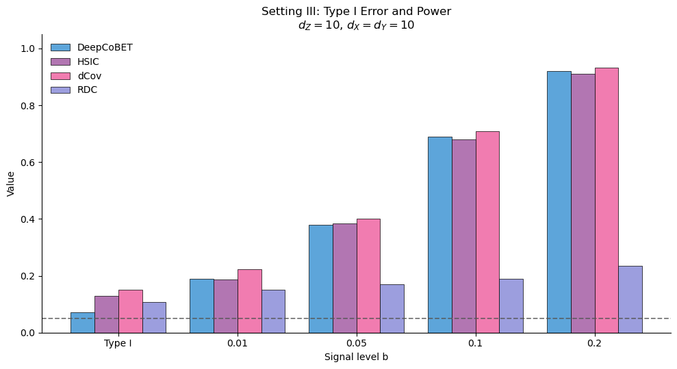
4.4. Real World Application
4.4.1. Conditional dependence analysis via DeepCoBET
We further analyze the corneal epithelial thickness data using DeepCoBET to investigate conditional dependence patterns. The dataset arises from a dry eye disease study and contains measurements across 25 predefined corneal regions for both eyes (OD and OS) from 189 subjects, obtained via anterior segment optical coherence tomography. Each observation is represented as a spatial thickness map, where regions correspond to angular sectors and concentric rings (see Figure 4.4).
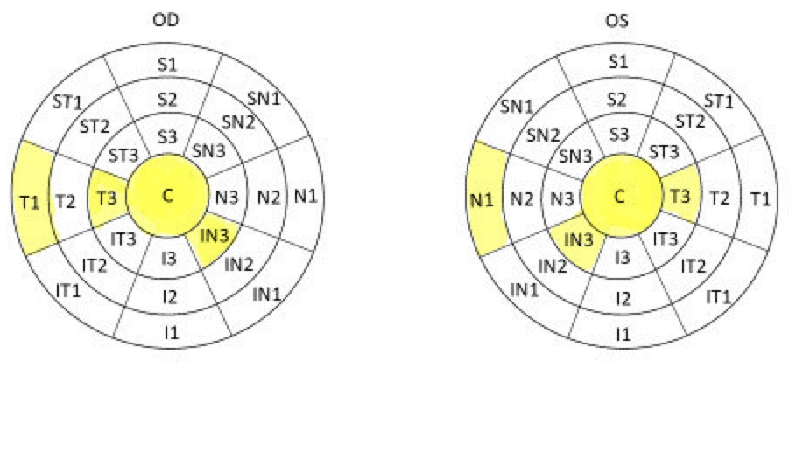
In contrast to the marginal analysis in Section 2.4.1, where strong and widespread dependence was observed across nearly all regions, we now examine whether these relationships persist after adjusting for shared structural and clinical factors.
We consider several clinically relevant variables as part of the conditioning set, including the Schirmer test (tear production), HOA - total (total higher-order aberrations, reflecting corneal optical irregularities), and logMAR (a standard measure of visual acuity). These variables capture important physiological characteristics that may induce apparent dependence between the two eyes.
The conditioning set is constructed in a region-specific manner. For each concentric section, includes all corneal regions outside the section of interest, together with the clinical variables. Specifically: (i) for the central region plus inner ring, consists of the middle and outer ring measurements along with Schirmer, HOA, and logMAR; (ii) for the middle ring, consists of the inner and outer ring measurements along with the clinical covariates; (iii) for the outer ring, consists of the inner and middle ring measurements along with the clinical covariates. This design removes global structural effects and allows us to isolate residual dependence specific to each region.
Following the DeepCoBET framework, we estimate conditional expectations of each regional measurement given using cross-fitted neural networks, and compute residuals for both OD and OS. The CoBET statistic is then applied to these residuals to test for conditional dependence.
Figure 4.5 presents the resulting dependence heatmaps. Compared to the unconditional results, where nearly all region pairs exhibited significant dependence, the conditional analysis reveals a substantial reduction in significant signals. This indicates that much of the apparent bilateral dependence can be explained by shared anatomical structure and common clinical factors.
In the central region plus inner ring (), only a small number of region pairs remain significant, including the central region (C), the variability measure (EStd Dev), and specific cross-regional interactions such as C with T3. These residual signals suggest that localized dependence in the central cornea cannot be fully explained by global structure or observed covariates, and may reflect intrinsic bilateral coordination near the visual axis.
In contrast, the middle ring () exhibits no statistically significant dependence after conditioning. This implies that the dependence observed in the marginal analysis is largely driven by surrounding regions and shared physiological factors, rather than direct coupling between corresponding regions.
For the outer ring (), only a single significant interaction is detected, corresponding to T1 versus N1. This isolated signal indicates that peripheral dependence is weak and highly localized, potentially reflecting subtle asymmetries in environmental exposure or increased measurement variability at the corneal boundary.
Overall, the conditional analysis reveals a markedly sparser and more localized dependence structure compared to the marginal case. While the unconditional analysis suggests strong bilateral symmetry across all regions, the DeepCoBET results demonstrate that this symmetry is largely attributable to shared structural and clinical influences. After adjustment, the remaining dependence is concentrated in a few specific regions, highlighting the importance of conditional testing in uncovering interpretable and biologically meaningful relationships.
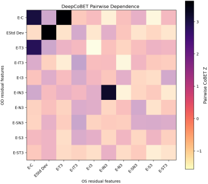
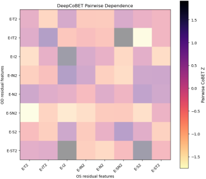
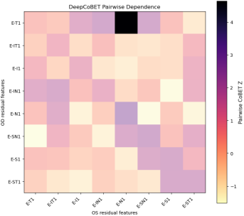
4.5. Conclusion
In this chapter, we developed a unified framework for multivariate conditional independence testing based on deep residualization and binary expansion representations. The proposed DeepCoBET procedure combines the flexibility of neural network-based conditional modeling with the interpretability and multiscale structure of the CoBET framework, providing a powerful and computationally efficient approach for detecting nonlinear and high-dimensional dependencies.
The simulation studies demonstrate that DeepCoBET achieves reliable Type I error control and strong power across a wide range of data-generating mechanisms, including linear and highly nonlinear settings. The method remains robust as the dimensionality of and increases, consistently exhibiting performance comparable to or better than state-of-the-art methods such as HSIC and distance covariance, while substantially outperforming RDC. These results highlight the ability of DeepCoBET to effectively capture complex dependence structures without sacrificing statistical validity.
The real-data application further illustrates the practical value of the proposed framework. By applying DeepCoBET to corneal epithelial thickness data, we showed that conditional analysis can substantially refine the understanding of dependence structures. While marginal analysis suggests widespread bilateral symmetry, the conditional results reveal that most of this dependence can be explained by shared anatomical and clinical factors. After adjustment, only a small number of localized interactions remain significant, particularly in the central corneal region. This demonstrates that DeepCoBET is not only effective for hypothesis testing, but also provides interpretable insights into the underlying structure of complex biomedical data.
Overall, the proposed DeepCoBET framework offers a flexible and scalable solution to multivariate conditional independence testing. By integrating modern machine learning techniques with a principled statistical testing framework, it addresses key challenges in high-dimensional settings and enables more accurate and interpretable inference in practical applications.
Chapter 5 Conclusion and Future Work
5.1. Conclusion
Testing statistical independence is a fundamental problem in statistics and machine learning, with wide applications in causal inference, graphical models, and high-dimensional data analysis. This dissertation develops a unified framework for testing both marginal independence and conditional independence for multivariate variables, with particular emphasis on high-dimensional settings and complex nonlinear relationships. The proposed methods combine ideas from binary expansion representations, U-statistic theory, and modern deep learning techniques, resulting in flexible and computationally efficient procedures with strong theoretical guarantees.
The first part of this dissertation introduces a new class of nonparametric tests for multivariate independence, including the Covariance Binary Expansion Test (CoBET), its distance-based extension dCoBET, and an adaptive aggregation method wa-dCoBET. The key idea is to represent dependence structures through binary expansion interaction coefficients, transforming the independence testing problem into testing cross-covariances among these coefficients. Although the number of possible interactions grows exponentially with dimension, we show that the resulting statistics can be expressed as U-statistics with explicit kernel representations, enabling efficient computation and theoretical analysis.
The proposed tests are distribution-free and automatically adapt to unknown dependence structures through multiscale truncation of higher-order interactions. In addition, the binary expansion framework provides interpretability by identifying the interaction components responsible for detected dependence. To further enhance statistical power and computational efficiency, we develop an adaptive weighted aggregation procedure, wa-dCoBET, which combines complementary test statistics derived from covariance-based and distance-based binary expansion representations. Extensive simulation studies and real-data applications demonstrate that the proposed methods consistently achieve competitive or superior performance compared with existing approaches such as HSIC and distance covariance, particularly in higher-dimensional and non-monotone dependence settings while maintaining accurate type I error control.
The second part of this dissertation addresses the problem of conditional independence testing. In many modern applications, the confounding variable may be high-dimensional, which poses significant challenges for traditional nonparametric methods due to the curse of dimensionality. To address this issue, we propose a hybrid framework, DeepBET, which integrates deep neural networks (DNNs) with binary expansion testing (BET). In this approach, DNN models are used to estimate the conditional mean functions of given and given , effectively removing the influence of high-dimensional confounding variables.
After estimating these conditional expectations, BET statistics are applied to the residuals to test for remaining dependence. To improve stability and statistical power, we incorporate a multi-split procedure that repeatedly partitions the data and aggregates the resulting test statistics. The DeepBET procedure effectively controls the type I error and demonstrates strong power under complex nonlinear alternatives. Moreover, the binary expansion representation provides interpretable insights into the form of the detected conditional dependence, which can be useful for subsequent modeling and scientific interpretation.
Building on these developments, the final part of this dissertation studies the more general problem of multivariate conditional independence testing, where both and are multivariate random vectors and the conditioning variable may be high-dimensional. In this setting, deep neural networks are first used to estimate the conditional expectations of and given . The resulting residual vectors are then analyzed using the multivariate independence testing framework developed earlier in this dissertation CoBET. This strategy combines the flexibility of deep learning for modeling complex conditional relationships with the interpretability and statistical power of binary expansion–based independence tests.
Overall, this dissertation contributes a comprehensive methodology for independence and conditional independence testing that addresses several important challenges in modern data analysis, including high dimensionality, nonlinear dependence structures, and multivariate interactions. The proposed framework bridges classical statistical theory with modern machine learning techniques, providing both theoretical insight and practical tools for dependence analysis in complex data environments.
5.2. Future Work
While the methods developed in this dissertation provide effective solutions for a variety of independence testing problems, several promising research directions remain for future investigation.
5.2.1. Direct Conditional Independence Testing via Binary Expansion Group Intersection Networks
The conditional independence procedures developed in this dissertation are based on a residualization strategy. Specifically, conditional independence is reduced to an unconditional independence problem by first estimating the conditional mean functions using deep neural networks and subsequently applying binary expansion-based independence tests to the estimated residuals. While this approach performs well in high-dimensional settings, its theoretical and empirical performance depends on the quality of the regression estimators.
A promising direction for future research is to develop conditional independence tests that operate directly on binary expansion representations without an explicit residualization step. Recent work by Zhou and Zhang (2026) introduced the Binary Expansion Group Intersection Network (BEGIN), a distribution-free graphical representation of conditional independence based on binary interaction features. The central result of BEGIN establishes that, for multivariate binary variables and bit-encoded multinomial variables, conditional independence can be characterized exactly through the covariance structure of binary interaction terms. Moreover, the authors show that dyadic binary representations provide increasingly accurate approximations for general continuous random vectors under mild regularity conditions. (Zhou and Zhang, 2026)
These results suggest a new avenue for extending the binary expansion framework developed in this dissertation. Rather than estimating residuals and testing their independence, one could directly construct test statistics from the covariance structure associated with BEGIN. Such procedures may provide a fully nonparametric and distribution-free approach to conditional independence testing that avoids the challenges of estimating high-dimensional regression functions. In addition, the graphical representation induced by BEGIN offers the possibility of identifying which binary interaction components are responsible for conditional dependence, thereby providing substantially greater interpretability than existing black-box methods.
More broadly, the combination of BEGIN and the binary expansion methodology developed in this dissertation may lead to a unified framework for independence testing, conditional independence testing, graphical model estimation, and causal structure learning. Investigating the statistical properties, computational scalability, and high-dimensional behavior of such procedures represents an important direction for future research.
5.2.2. Independence Testing for Modern Machine Learning Models
Recent developments in large-scale machine learning models raise new questions about independence testing in the context of model parameters and learned representations. In particular, recent work by Zhu et al. (2025a) studies the problem of determining whether two neural network models were trained independently by analyzing their learned weights. The authors formulate a hypothesis testing problem in which the null hypothesis states that the parameters of two models are independent, corresponding to the case where the models were trained from independent random initializations. Under this framework, dependence may arise when one model is derived from another through procedures such as fine-tuning, pruning, or distillation. In the constrained setting considered in Zhu et al. (2025a), assumptions are made about the training procedure and model architecture that allow the construction of exact -values. In particular, if the training algorithm is equivariant to permutations of hidden units at initialization, then exchangeable copies of model weights can be simulated and used to construct permutation-based independence tests. These tests compare similarity measures between the original pair of models with those obtained from the simulated copies, allowing reliable detection of dependence between models. The authors also consider an unconstrained setting in which the training assumptions may not hold, such as when adversarial modifications or architectural changes are introduced. In this case, hidden representations between models are first aligned before computing similarity measures between the aligned components to detect dependence. This approach can even localize which parts of a model are derived from another, providing insight into relationships between large language models. These recent developments highlight a new application domain for independence testing beyond traditional statistical data analysis. In future work, it would be interesting to explore whether the binary expansion framework developed in this dissertation can be extended to analyze dependence between neural network parameters or internal representations. In particular, the multiscale interaction structure underlying CoBET and its extensions may provide new ways to detect subtle dependencies among high-dimensional model weights or learned feature representations. Such tools could contribute to emerging areas such as model provenance analysis, intellectual property protection for machine learning models, and auditing of large-scale AI systems.
5.2.3. Conditional Independence Testing for Sequential Data
Many real-world datasets involve sequential or time-dependent observations, such as financial time series, climate systems, biological signals, and language data. In such settings, dependence structures evolve over time and the classical assumption of independent and identically distributed observations may no longer hold. As a result, extending conditional independence testing methods to sequential data represents an important direction for future research.
Recent work in causal discovery for time series has emphasized the role of conditional independence tests in identifying causal relationships among temporally ordered variables. For example, the PCMCI framework proposed by Runge et al. (2019) combines conditional independence tests with a constraint-based causal discovery algorithm to estimate causal networks from large-scale time series data. The method addresses challenges such as strong autocorrelation and high dimensionality by carefully selecting conditioning sets and exploiting temporal ordering.
Subsequent developments such as PCMCI+ further extend this framework to detect both lagged and contemporaneous causal relations in nonlinear and autocorrelated time series datasets (Runge, 2020). These approaches demonstrate that conditional independence testing can play a central role in learning causal structures from sequential data.
Extending the methods developed in this dissertation to sequential settings would therefore be a promising research direction. One potential approach is to integrate the proposed binary expansion–based testing framework with models designed for sequential data, such as recurrent neural networks, temporal convolutional networks, or transformer architectures. These models could first estimate conditional relationships across time, after which independence testing procedures such as CoBET and its extensions could be applied to the resulting residual processes.
Developing such methods could broaden the applicability of binary expansion testing to important domains including time-series causal discovery, reinforcement learning, and dynamic graphical models.
5.2.4. Extensions to Structured and Multi-Modal Data
Another promising direction is to extend the proposed testing framework to more complex data types, including structured data, graph data, image data, and multi-modal datasets. In many modern applications, variables may represent complex objects rather than simple vectors. Developing binary expansion representations and independence tests tailored to these data structures could significantly broaden the applicability of the proposed methodology.
5.2.5. Applications to Causal Discovery
Independence and conditional independence tests are essential components of many causal discovery algorithms. The proposed testing framework could therefore be incorporated into constraint-based causal discovery methods to improve their performance in high-dimensional and nonlinear settings. Potential application areas include genomics, biomedical research, economics, and other scientific fields where complex dependence structures commonly arise.
5.3. Final Remarks
This dissertation develops a unified framework for independence and conditional independence testing by combining multiscale statistical representations with modern machine learning techniques. The proposed methods demonstrate that binary expansion–based testing can be effectively integrated with deep neural network models to address challenging high-dimensional problems. These approaches provide flexible, interpretable, and computationally efficient tools for detecting complex dependence structures in modern datasets.
The future research directions outlined above highlight many opportunities for extending this framework and further advancing the theory and applications of independence testing in statistics and machine learning.
References
- Categorical data analysis. 3rd edition, Wiley. Cited by: §1.2, §2.1.
- On deep learning as a remedy for the curse of dimensionality in nonparametric regression. The Annals of Statistics 47 (4), pp. 2261 – 2285. External Links: Document, Link Cited by: §3.1, §3.5.
- Mutual information neural estimation. In Proceedings of the 35th International Conference on Machine Learning, Proceedings of Machine Learning Research, Vol. 80, pp. 531–540. Cited by: §1.2, §2.1.
- Conditional independence testing using generative adversarial networks. pp. 2199–2208. Cited by: §1.3, §1.4, §3.1, §3.1, §3.2.1, §3.3.2, §3.3.2, §3.3.2, §4.1.
- Controlling the false discovery rate: a practical and powerful approach to multiple testing. Journal of the Royal Statistical Society: Series B (Methodological) 57 (1), pp. 289–300. Cited by: §2.3.2.
- A consistent test of independence based on a sign covariance related to kendall’s tau. Bernoulli 20 (2), pp. 1006–1028. Cited by: §2.1.
- A consistent test of independence based on a sign covariance related to kendall’s tau. Bernoulli 20 (2), pp. 1006–1028. Cited by: §1.2, §1.4.
- Efficient multivariate entropy estimation via -nearest neighbour distances. The Annals of Statistics 47 (1), pp. 288–318. Cited by: §1.1.
- Regularized estimation of large covariance matrices. The Annals of Statistics 36 (1). External Links: ISSN 0090-5364, Link, Document Cited by: §3.5.
- Distribution free tests of independence based on the sample distribution function. The Annals of Mathematical Statistics 32 (2), pp. 485–498. Cited by: §1.1, §1.2.
- Distribution free tests of independence based on the sample distribution function. Annals of Mathematical Statistics 32 (2), pp. 485–498. Cited by: §2.1.
- BELIEF in dependence: leveraging atomic linearity in data bits for rethinking generalized linear models. The Annals of Statistics 53 (3), pp. 1068–1094. Cited by: §2.1.
- Feature selection in machine learning: a new perspective. Neurocomputing 300, pp. 70–79. External Links: Document Cited by: §2.1, §3.1.
- A constrained minimization approach to sparse precision matrix estimation. Journal of the American Statistical Association 106 (494), pp. 594–607. Cited by: §4.1.
- A new coefficient of correlation. Journal of the American Statistical Association 116 (536), pp. 2009–2022. Cited by: §2.1, §2.3.
- Tests for high-dimensional covariance matrices. Journal of the American Statistical Association 105 (490), pp. 810–819. External Links: Document, Link, https://doi.org/10.1198/jasa.2010.tm09560 Cited by: §2.2.2.
- Sieve extremum estimates for weakly dependent data. Econometrica 66 (2), pp. 289–314. Cited by: §3.3.1.
- Double/debiased machine learning for treatment and structural parameters. The Econometrics Journal 21 (1), pp. C1–C68. External Links: ISSN 1368-4221, Document, Link, https://academic.oup.com/ectj/article-pdf/21/1/C1/27684918/ectj00c1.pdf Cited by: §1.5, §3.4.
- An optimal test for high-dimensional independence. Journal of the American Statistical Association 118 (542), pp. 1050–1062. Cited by: §1.2.
- Approximation by superpositions of a sigmoidal function. Mathematics of Control, Signals and Systems 2 (4), pp. 303–314. Cited by: §1.5.
- Independence testing-based approach to causal discovery under measurement error and linear non-gaussian models. Advances in Neural Information Processing Systems 35, pp. 27524–27536. Cited by: §1.2, §2.1.
- Covariance selection. Biometrics 28 (1), pp. 157–175. Cited by: §4.1.
- Conditional independence testing via latent representation learning. In 2022 IEEE International Conference on Data Mining (ICDM), pp. 121–130. Cited by: §1.3, §1.4, §3.1.
- Deep neural networks for estimation and inference. Econometrica 89 (1), pp. 181–213. External Links: Document, Link, https://onlinelibrary.wiley.com/doi/pdf/10.3982/ECTA16901 Cited by: §3.4.
- Frequency distribution of the values of the correlation coefficient in samples from an indefinitely large population. Biometrika 10 (4), pp. 507–521. Cited by: §1.1.
- On the interpretation of from contingency tables, and the calculation of p. Journal of the Royal Statistical Society 85 (1), pp. 87–94. Cited by: §1.1, §1.1.
- Sparse inverse covariance estimation with the graphical lasso. Biostatistics 9 (3), pp. 432–441. Cited by: §4.1.
- Kernel measures of conditional dependence. In Neural Information Processing Systems, External Links: Link Cited by: §1.3, §1.4, §3.1.
- Estimating mutual information for discrete-continuous mixtures. Advances in neural information processing systems 30. Cited by: §2.1.
- A goodness-of-fit test for copulas based on the probability integral transform. Annals of Statistics 32 (3), pp. 1422–1451. Cited by: §2.1.
- Tests of independence and randomness based on the empirical copula process. Test 13 (2), pp. 335–369. Cited by: §1.2, §1.4.
- Deep learning. MIT Press. Cited by: Figure 1.1.
- Multi-scale fisher’s independence test for multivariate dependence. Biometrika 109 (3), pp. 707–726. Cited by: §2.3.
- A kernel two-sample test. J. Mach. Learn. Res. 13, pp. 723–773. External Links: Link Cited by: §2.3.
- Measuring statistical dependence with hilbert–schmidt norms. In Proceedings of the 16th International Conference on Algorithmic Learning Theory, Lecture Notes in Computer Science, Vol. 3734, pp. 63–77. Cited by: §1.1, §1.2, §2.1, §2.1, §4.1, §4.3.2.
- A kernel statistical test of independence. In Advances in Neural Information Processing Systems (NeurIPS), Vol. 20, pp. 585–592. External Links: Link Cited by: §2.1.
- Rank-transformed subsampling: inference for multiple data splitting and exchangeable p-values. External Links: 2301.02739 Cited by: §3.1, §3.2.2, §3.2.2.
- Unified tests for nonparametric functions in rkhs with kernel selection and regularization. Statistica Sinica 33 (2), pp. 919–944. External Links: Document, Link Cited by: §2.1, §2.2.3, §2.6.6, §2.6.6, §2.6.6, §2.6.6, §2.6.6.
- A consistent multivariate test of association based on ranks of distances. The Annals of Statistics 41 (6), pp. 3361–3391. Cited by: §1.2.
- Consistent distribution-free -sample and independence tests using ranks of distances. Annals of Statistics 41 (1), pp. 108–138. Cited by: §2.1.
- A non-parametric test of independence. Annals of Mathematical Statistics 19 (4), pp. 546–557. Cited by: §1.1, §1.2, §2.1.
- Multilayer feedforward networks are universal approximators. Neural Networks 2 (5), pp. 359–366. Cited by: §1.5.
- Nonlinear causal discovery with additive noise models. In Advances in Neural Information Processing Systems, Vol. 21. Cited by: §1.3, §1.4, §3.1.
- Confidence intervals for high-dimensional inverse covariance estimation. Electronic Journal of Statistics 9 (1), pp. 1205–1229. Cited by: §4.1.
- A proof of convergence for the gradient descent optimization method with random initializations in the training of neural networks with relu activation for piecewise linear target functions. Journal of Machine Learning Research 23 (260), pp. 1–50. External Links: Link Cited by: §3.1.
- A new measure of rank correlation. Biometrika 30 (1–2), pp. 81–93. Cited by: §1.1.
- Classification-based two-sample tests via random forests. Bernoulli 27 (2), pp. 1065–1092. Cited by: §2.1.
- Adam: a method for stochastic optimization. In International Conference on Learning Representations (ICLR), Cited by: §1.5.
- A goodness-of-fit test for multivariate archimean copulas. Journal of Multivariate Analysis 95 (1), pp. 118–152. Cited by: §2.1.
- Estimating mutual information. Physical review E 69 (6), pp. 066138. Cited by: §1.2, §2.1.
- Estimating mutual information. Physical Review E 69 (6), pp. 066138. Cited by: §1.1.
- Chapter seven - architecture of neural processing unit for deep neural networks. In Hardware Accelerator Systems for Artificial Intelligence and Machine Learning, S. Kim and G. C. Deka (Eds.), Advances in Computers, Vol. 122, pp. 217–245. External Links: ISSN 0065-2458, Document, Link Cited by: §3.2.
- Conditional independence testing via nonparametric conditional density estimation. Journal of the American Statistical Association 115 (529), pp. 460–474. Cited by: §1.3, §3.1.
- The randomized dependence coefficient. In Advances in Neural Information Processing Systems, Vol. 30, pp. 1–9. Cited by: §2.1, §2.3, §4.3.2.
- Revisiting classifier two-sample tests. arXiv preprint arXiv:1610.06545. Cited by: §1.2.
- Deep network approximation for smooth functions. SIAM Journal on Mathematical Analysis 53 (5), pp. 5465–5506. External Links: ISSN 1095-7154, Link, Document Cited by: §3.1.
- On the number of linear regions of deep neural networks. In Advances in Neural Information Processing Systems, Vol. 27. Cited by: §1.5.
- Kernel mean embedding of distributions: a review and beyond. Foundations and Trends in Machine Learning 10 (1-2), pp. 1–141. Cited by: §2.1.
- Causal inference in statistics: an overview. Statistics Surveys 3, pp. 96–146. External Links: Link Cited by: §3.1.
- Mathematical contributions to the theory of evolution. iii. regression, heredity, and panmixia. Philosophical Transactions of the Royal Society of London. Series A 187, pp. 253–318. Cited by: §1.1.
- Deep learning. External Links: 1807.07987 Cited by: §3.1.
- On variational bounds of mutual information. International conference on machine learning, pp. 5171–5180. Cited by: §2.1.
- Goodness-of-fit tests for copulas: a review and a power study. Insurance: Mathematics and economics 44 (2), pp. 199–213. Cited by: §2.1.
- Asymptotic normality and optimalities in estimation of large gaussian graphical models. Annals of Statistics 43 (3), pp. 991–1026. Cited by: §4.1.
- Detecting and quantifying causal associations in large nonlinear time series datasets. Science Advances 5 (11), pp. eaau4996. Cited by: §5.2.3.
- Discovering contemporaneous and lagged causal relations in autocorrelated nonlinear time series datasets. In Proceedings of the 36th Conference on Uncertainty in Artificial Intelligence (UAI), pp. 1388–1397. Cited by: §5.2.3.
- Nonparametric regression using deep neural networks with relu activation function. The Annals of Statistics 48 (4), pp. 1875–1897. Cited by: §3.1, §3.3.1.
- Nonparametric regression using deep neural networks with relu activation. The Annals of Statistics 48 (4), pp. 1875–1897. Cited by: §1.5.
- Equivalence of distance-based and rkhs-based statistics in hypothesis testing. The Annals of Statistics 41 (5). External Links: ISSN 0090-5364, Link, Document Cited by: §2.1.
- Model-powered conditional independence test. External Links: 1709.06138 Cited by: §3.3.2.
- The hardness of conditional independence testing and the generalised covariance measure. The Annals of Statistics 48 (3). External Links: ISSN 0090-5364, Link, Document Cited by: §1.3, §1.4, §3.1, §3.1, §3.2.1, §3.3.2, §3.3.2, §3.3.2.
- Double generative adversarial networks for conditional independence testing. The Journal of Machine Learning Research 22 (1), pp. 13029–13060. Cited by: §1.3, §1.4, §3.1, §3.1, §3.2.1, §3.3.2, §3.3.2, §4.1.
- Nearest neighbor estimates of entropy. American journal of mathematical and management sciences 23 (3-4), pp. 301–321. Cited by: §2.1.
- The proof and measurement of association between two things. The American Journal of Psychology 15 (1), pp. 72–101. Cited by: §1.1.
- Universality, characteristic kernels and rkhs embedding of measures. Journal of Machine Learning Research 12, pp. 2389–2410. Cited by: §2.1.
- On the influence of the kernel on the consistency of support vector machines. Journal of Machine Learning Research 13, pp. 2707–2731. Cited by: §2.1.
- Approximate kernel-based conditional independence tests for fast non-parametric causal discovery. External Links: 1702.03877 Cited by: §1.3, §1.4, §3.1, §4.1.
- The probable error of a mean. Biometrika 6 (1), pp. 1–25. Cited by: §1.1.
- Testing conditional independence via empirical likelihood. Journal of Econometrics 182, pp. 27–44. External Links: Link Cited by: §1.3, §1.4, §3.1.
- A consistent characteristic function-based test for conditional independence. Journal of Econometrics 141 (2), pp. 807–834. Cited by: §1.3, §3.1.
- A nonparametric hellinger metric test for conditional independence. Econometric Theory 24 (4), pp. 829–864. External Links: Document Cited by: §1.3, §3.1.
- Measuring and testing dependence by correlation of distances. Annals of Statistics 35 (6), pp. 2769–2794. External Links: Document, Link Cited by: §1.2, §2.1, §2.1, §2.1, §2.2.1, §2.2.1, §2.3, §4.3.2.
- Measuring and testing dependence by correlation of distances. The Annals of Statistics 35 (6), pp. 2769–2794. Cited by: §1.1.
- Modern dimension reduction. Elements in Quantitative and Computational Methods for the Social Sciences, Cambridge University Press. Cited by: §2.1, §3.1.
- Conditional distance correlation. Journal of the American Statistical Association 110 (512), pp. 1726–1734. Cited by: §1.3, §1.4, §3.1, §3.3.2.
- Symmetric rank covariances: a generalized framework for nonparametric measures of dependence. Biometrika 105 (3), pp. 547–562. Cited by: §2.1.
- Testing conditional independence with deep neural network based binary expansion testing (deepbet). In Proceedings of The 28th International Conference on Artificial Intelligence and Statistics, Y. Li, S. Mandt, S. Agrawal, and E. Khan (Eds.), Proceedings of Machine Learning Research, Vol. 258, pp. 4690–4698. External Links: Link Cited by: §3.1.
- Causal discovery using regression-based conditional independence tests. In AAAI Conference on Artificial Intelligence, External Links: Link Cited by: §1.3, §3.1.
- BEAUTY powered BEAST. arXiv preprint arXiv:2103.00674. Cited by: §2.1, §2.2.1.
- BET on independence. Journal of the American Statistical Association 114 (528), pp. 1620–1637. Cited by: §2.1, §2.2.1, §2.3.5, §2.3.5, §2.3.5, §2.3.5, §2.3.5, Table 2.3, §3.1, §3.2.1, §3.5, §3.5.
- Kernel-based conditional independence test and application in causal discovery. External Links: 1202.3775 Cited by: §1.3, §1.4, §3.1, §4.1.
- A conditional independence test via supervised learning. Journal of the American Statistical Association 118 (541), pp. 387–399. Cited by: §1.3, §1.4, §3.1.
- False discovery rate control for structured multiple testing: asymmetric rules and conformal q-values. External Links: 2311.15322, Link Cited by: §3.3.3.
- Binary expansion group intersection network. External Links: 2603.24763, Link Cited by: §5.2.1.
- Projection correlation between two random vectors. Biometrika 104 (4), pp. 829–843. Cited by: §2.1.
- Independence tests for language models. arXiv preprint arXiv:2502.12292. Cited by: §5.2.2.
- Independence tests for language models. In Proceedings of the 42nd International Conference on Machine Learning (ICML 2025), External Links: Link Cited by: §1.2, §2.1.
Appendix
Publication Agreements
See pages - of ICML_Copyright.pdf
See pages - of DeepBET_Copyright.pdf
VITA
Yang Yang
EDUCATION
-
•
Ph.D. in Mathematics, University of Illinois Chicago, 2026.
-
•
M.S. in Marketing Analytics and Communication, Illinois Institute of Technology, 2014.
-
•
B.Eng. in Inorganic Nonmetallic Materials Engineering, University of Science and Technology Beijing, 2012.
PUBLICATIONS
-
•
Yang, Y., Zhang, K., and Zhong, P.-S. “Testing Conditional Independence with Deep Neural Network Based Binary Expansion Testing (DeepBET).” Proceedings of the 28th International Conference on Artificial Intelligence and Statistics (AISTATS), 2025.
-
•
Yang, Y., Zhong, P.-S., and Zhang, K. “Adaptive Multiscale Binary Expansion Tests for Independence.” International Conference on Machine Learning (ICML), 2026.
-
•
Katz, E. A., Yang, Y., Surenkhuu, B., Dabre, Z., Dammak, A., Rao, V. R., Mun, C., Pradeep, A., Kim, C., Aref, A. A., Bhat, P., de la Cruz, J., Kaja, S., and Jain, S. “Neutrophil Extracellular Trap Components Are Present in the Aqueous Humor of Glaucoma Patients.” Translational Vision Science & Technology.
-
•
Dabre, Z. G., Bernal, A., Yang, Y., Surenkhuu, B., Mun, J., Hernandez, D., Pradeep, A., Sheth, T., Kim, C., Zhong, P.-S., Byrne, K., Mun, C., and Jain, S. “Corneal Epithelial Thickness: A Marker for Auto-immune Dry Eye Disease.” The Ocular Surface, under review.
SELECTED CONFERENCE PRESENTATIONS
-
•
Poster, “Adaptive Multiscale Binary Expansion Tests for Independence,” International Conference on Machine Learning (ICML), 2026.
-
•
Poster, “Testing Conditional Independence with Deep Neural Network Based Binary Expansion Testing (DeepBET),” International Conference on Artificial Intelligence and Statistics (AISTATS), 2025.
-
•
Talk, “Conditional Independence with Deep Neural Network Based Binary Expansion Test (DeepBET),” Joint Statistical Meetings (JSM), Portland, Oregon, 2024.
-
•
Talk, “Conditional Independence with Deep Neural Network Based Binary Expansion Test (DeepBET),” WNAR/IMS/Graybill Annual Meeting, Colorado, 2024.
-
•
Session Chair, “Recent Advances in Statistical Inference and Their Applications,” WNAR/IMS/Graybill Annual Meeting, Colorado, 2024.
PROFESSIONAL AND ACADEMIC EXPERIENCE
-
•
Research Assistant, University of Illinois Chicago, Department of Mathematics, Statistics, and Computer Science, 2023–2026.
-
•
Teaching Assistant, University of Illinois Chicago, Department of Mathematics, Statistics, and Computer Science, 2020–2023.
-
•
Biostatistician Intern, Edwards Lifesciences, 2024.
-
•
Data Scientist Intern, Schnucks, 2023.